فصل ۵: ترمیم و بازسازی تصویر#
این فصل بر پایۀ محتوای علمی آمادهشدۀ پیوستشده تنظیم شده است. هدف، حفظ مسیر آموزشی آن از مدل تخریب و نویز تا ترمیم کلاسیک و سپس بازسازی تصویر از پروجکشنها است. در نسخهٔ Jupyter Book، توضیحات فارسی منبع حفظ شدهاند؛ روابط محوری به MathJax بازنویسی شدهاند و تصویر تمام روابط شمارهدار نیز برای تطبیق مستقیم با منبع باقی مانده است.
اهداف یادگیری#
پس از مطالعۀ این فصل انتظار میرود بتوانید:
مدل \(g=h*f+\eta\) را در حوزههای مکان و فرکانس تفسیر کنید.
مدلهای اصلی نویز و رابطۀ آنها با انتخاب فیلتر مکانی را توضیح دهید.
فیلترهای میانگین، میانه، پادهارمونیک و تطبیقی را مقایسه کنید.
نویز تناوبی را در حوزۀ فرکانس شناسایی و با فیلترهای ناچ کاهش دهید.
PSF/تابع تخریب را از مدل فیزیکی یا داده تخمین بزنید.
محدودیت فیلتر معکوس و منطق فیلترهای Wiener و CLS را تحلیل کنید.
تبدیل Radon، قضیۀ Fourier Slice و بازسازی فیلترشدۀ CT را توضیح دهید.
اثر نمونهبرداری، فیلتر ramp و هندسۀ fan-beam را بر کیفیت بازسازی تشخیص دهید.

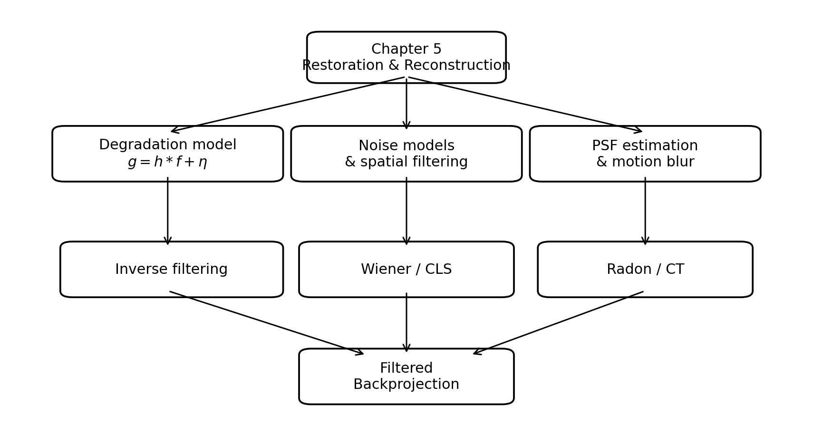
Fig. 39 نقشۀ مفهومی فصل: از مدل تخریب و نویز، به ترمیم پایدار و سپس بازسازی از پروجکشنها.#
فایلهای اجرایی و منابع همراه#
راهنمای استفاده از جزوه#
این فصل از دو مسئلهٔ نزدیک ولی متفاوت صحبت میکند. در ترمیم تصویر یک تصویر تخریبشده در اختیار داریم و میخواهیم اثر تاری و نویز را با مدل معکوس کنیم. در بازسازی از پروجکشنها اساساً تصویر دوبعدی مستقیماً اندازهگیری نشده و باید آن را از مجموعهای از انتگرالهای خطی (مانند دادهٔ CT) بسازیم.
نکتهٔ مفهومی
سه سؤال را هنگام خواندن هر فرمول بپرسید: (۱) چه چیزی معلوم است؟ (۲) چه چیزی مجهول است؟ (۳) این فرمول مشکل را در کدام حوزه سادهتر میکند: مکان، فرکانس یا احتمال؟
نکتهٔ تدریس
در ویدیو بهتر است هر بخش را با «مشکل» شروع کنید، سپس شکل مربوط را نشان دهید، بعد فرمول را معرفی کنید و در پایان بگویید اگر فرض فرمول نقض شود چه اتفاقی میافتد. مثال: فیلتر معکوس روی کاغذ ساده است، اما وجود صفرهای \(H\) آن را از نظر عددی ناپایدار میکند؛ وینر دقیقاً برای همین تنگنا وارد میشود.
نمادهای پرتکرار#
نماد معنا
\(f(x,y)\) تصویر اصلی/تخریبنشده \(g(x,y)\) تصویر مشاهدهشده و تخریبشده \(\hat f(x,y)\) برآورد تصویر اصلی \(h(x,y)\) پاسخ ضربه یا PSF سامانهٔ تخریب \(\eta(x,y)\) نویز افزوده \(F,G,H,N\) تبدیل فوریهٔ کمیتهای متناظر در حوزهٔ مکان \(S_{xy}\) همسایگی مکانی حول پیکسل \((x,y)\) \(\rho,\theta\) پارامتر فاصله و زاویه در تبدیل رادون
مدل تخریب و ترمیم تصویر#
فصل با یک مدل سیستماتیک آغاز میشود: تصویر واقعی وارد یک سامانهٔ تخریب میشود، سپس نویز به آن افزوده میشود و آنچه در اختیار ماست تصویر تخریبشده است. هدف ترمیم این نیست که تصویر را «زیباتر» کنیم، بلکه با استفاده از یک مدل فیزیکی/آماری از تخریب، تخمینی از تصویر اصلی بسازیم. دو نمایش مکانی و فرکانسی این مدل در سراسر فصل تکرار میشوند.
نکتهٔ تدریس
در تدریس این بخش ابتدا رابطهٔ علت و معلولی را بگویید و سپس به فرمول بروید. دانشجو باید بداند هر پارامتر چه اثر قابل مشاهدهای در شکل دارد؛ فرمول بدون اتصال به تصویر بهسرعت تبدیل به حفظیات میشود.
(5-1) - مدل تخریب در حوزهٔ مکان#
صورت محاسباتی اصلی: $\( g(x,y)=h(x,y)*f(x,y)+\eta(x,y). \)$

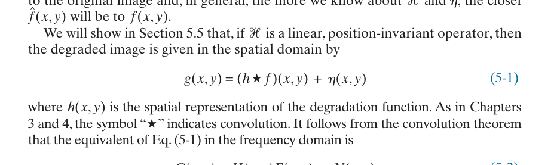
Fig. 40 تصویر رابطۀ شمارهدار (5-1) - مدل تخریب در حوزهٔ مکان از منبع علمی مبنا.#
توضیح: در اینجا \(f\) تصویر مطلوب، \(h\) پاسخ تخریب/PSF، \(\eta\) نویز و \(g\) تصویر مشاهدهشده است. کانولوشن نشان میدهد هر نقطهٔ تصویر اصلی توسط سامانه پخش میشود و سپس نویز اضافه میگردد.
ارجاع به منبع: صفحهٔ 318 کتاب، فرمول (5-1).
(5-2) - مدل تخریب در حوزهٔ فرکانس#
در حوزۀ فرکانس: $\( G(u,v)=H(u,v)F(u,v)+N(u,v). \)$

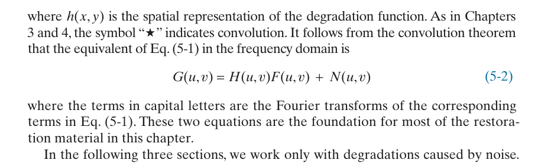
Fig. 41 تصویر رابطۀ شمارهدار (5-2) - مدل تخریب در حوزهٔ فرکانس از منبع علمی مبنا.#
توضیح: تبدیل فوریه کانولوشن را به ضرب تبدیل میکند؛ بنابراین تحلیل و طراحی فیلترهای ترمیمی در حوزهٔ فرکانس بسیار سادهتر میشود.
ارجاع به منبع: صفحهٔ 318 کتاب، فرمول (5-2).

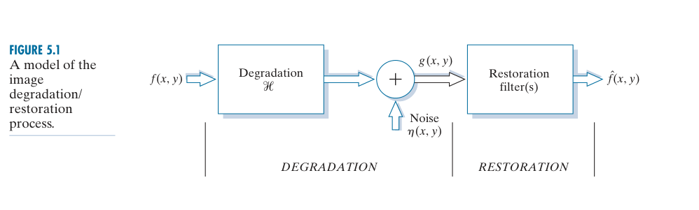
Fig. 42 شکل 5.1. نمودار کل فصل را در یک نگاه نشان میدهد: \(f\) وارد بلوک تخریب میشود، نویز افزوده میگردد و \(g\) حاصل میشود؛ بلوک Restoration با دانستن/تخمین مدل تخریب و نویز، \(\hat f\) را تولید میکند. هنگام تدریس تأکید کنید که Restoration یک مسئلهٔ معکوس است.#
ارجاع به منبع: صفحهٔ 318 کتاب، شکل 5.1.
جمعبندی این بخش#
کل فصل بر مدل \(G=HF+N\) بنا شده است. هر روش بعدی یا \(H\) را تخمین میزند، یا اثر \(N\) را مهار میکند، یا هر دو را همزمان انجام میدهد.
مدلهای نویز#
در این بخش نویز بهعنوان متغیر تصادفی مدل میشود. نکتهٔ آموزشی مهم این است که «شکل هیستوگرام نویز» سرنخ مستقیم دربارهٔ نوع نویز و انتخاب فیلتر میدهد. توزیعهای گاوسی، رایلی، ارلانگ/گاما، نمایی، یکنواخت و نمکوفلفل معرفی میشوند و سپس میانگین و واریانس از یک ناحیهٔ تقریباً یکنواخت تصویر برآورد میگردند.
نکتهٔ تدریس
در تدریس این بخش ابتدا رابطهٔ علت و معلولی را بگویید و سپس به فرمول بروید. دانشجو باید بداند هر پارامتر چه اثر قابل مشاهدهای در شکل دارد؛ فرمول بدون اتصال به تصویر بهسرعت تبدیل به حفظیات میشود.
(5-3) - چگالی احتمال نویز گاوسی#
برای نویز گاوسی با میانگین \(\mu\) و انحراف معیار \(\sigma\): $\( p(z)=\frac{1}{\sqrt{2\pi}\sigma}\exp\!\left[-\frac{(z-\mu)^2}{2\sigma^2}\right]. \)$

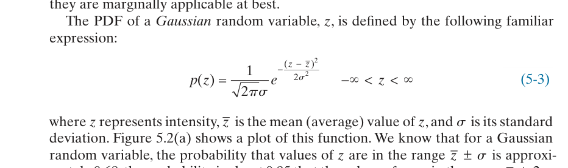
Fig. 43 تصویر رابطۀ شمارهدار (5-3) - چگالی احتمال نویز گاوسی از منبع علمی مبنا.#
توضیح: این رابطه «چگالی احتمال نویز گاوسی» را تعریف میکند. پارامترهای توزیع شکل هیستوگرام نویز را تعیین میکنند و از روی آنها میتوان نوع نویز و فیلتر مناسب را انتخاب کرد.
ارجاع به منبع: صفحهٔ 319 کتاب، فرمول (5-3).
(5-4) - چگالی احتمال نویز رایلی#

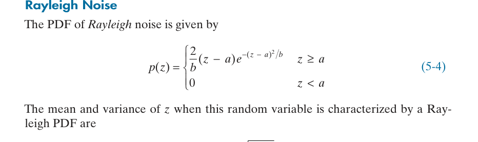
Fig. 44 تصویر رابطۀ شمارهدار (5-4) - چگالی احتمال نویز رایلی از منبع علمی مبنا.#
توضیح: این رابطه «چگالی احتمال نویز رایلی» را تعریف میکند. پارامترهای توزیع شکل هیستوگرام نویز را تعیین میکنند و از روی آنها میتوان نوع نویز و فیلتر مناسب را انتخاب کرد.
ارجاع به منبع: صفحهٔ 320 کتاب، فرمول (5-4).
(5-5) - میانگین توزیع رایلی#

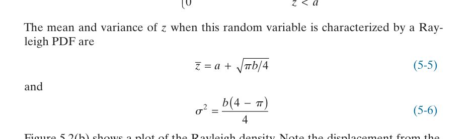
Fig. 45 تصویر رابطۀ شمارهدار (5-5) - میانگین توزیع رایلی از منبع علمی مبنا.#
توضیح: این رابطه «میانگین توزیع رایلی» را از پارامترهای توزیع بهدست میدهد. این ممان آماری برای برآورد شدت نویز و تنظیم فیلترهای تطبیقی بهکار میرود.
ارجاع به منبع: صفحهٔ 320 کتاب، فرمول (5-5).
(5-6) - واریانس توزیع رایلی#

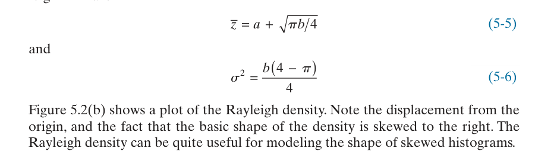
Fig. 46 تصویر رابطۀ شمارهدار (5-6) - واریانس توزیع رایلی از منبع علمی مبنا.#
توضیح: این رابطه «واریانس توزیع رایلی» را از پارامترهای توزیع بهدست میدهد. این ممان آماری برای برآورد شدت نویز و تنظیم فیلترهای تطبیقی بهکار میرود.
ارجاع به منبع: صفحهٔ 320 کتاب، فرمول (5-6).

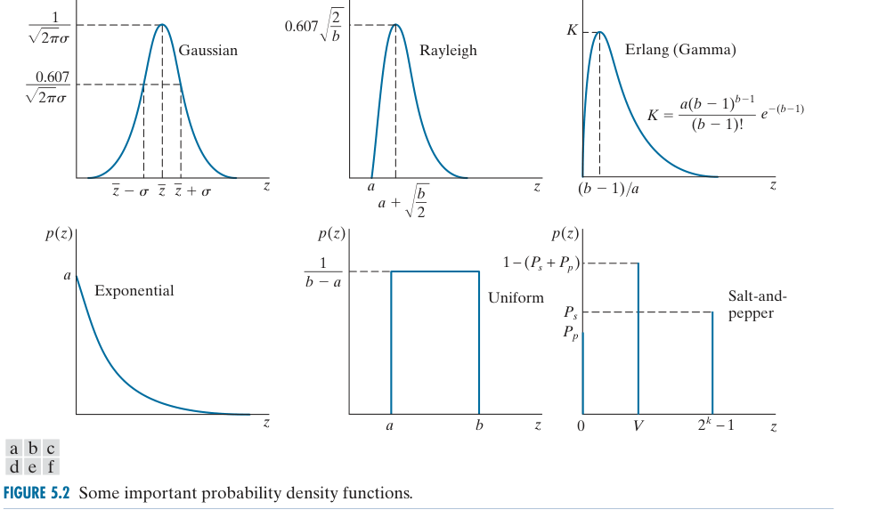
Fig. 47 شکل 5.2. شش PDF مهم کنار هم مقایسه شدهاند. به تقارن گاوسی، چولگی رایلی/ارلانگ/نمایی، تختبودن یکنواخت و دو ضربهٔ نمکوفلفل دقت کنید؛ شکل هیستوگرام تعیینکنندهٔ رفتار فیلتر است.#
ارجاع به منبع: صفحهٔ 320 کتاب، شکل 5.2.
(5-7) - چگالی احتمال نویز ارلانگ#

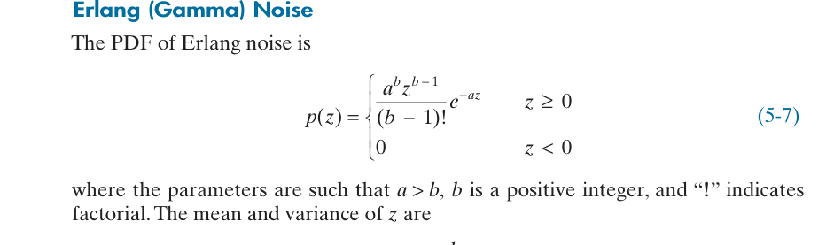
Fig. 48 تصویر رابطۀ شمارهدار (5-7) - چگالی احتمال نویز ارلانگ از منبع علمی مبنا.#
توضیح: این رابطه «چگالی احتمال نویز ارلانگ» را تعریف میکند. پارامترهای توزیع شکل هیستوگرام نویز را تعیین میکنند و از روی آنها میتوان نوع نویز و فیلتر مناسب را انتخاب کرد.
ارجاع به منبع: صفحهٔ 321 کتاب، فرمول (5-7).
(5-8) - میانگین توزیع ارلانگ#

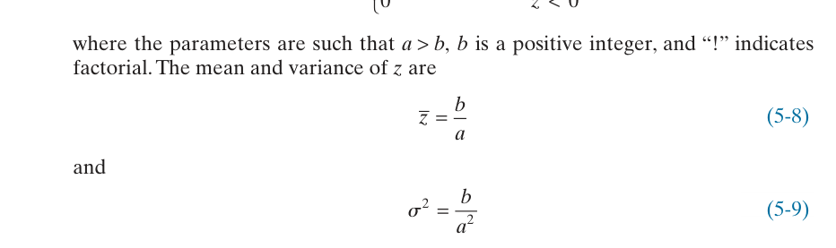
Fig. 49 تصویر رابطۀ شمارهدار (5-8) - میانگین توزیع ارلانگ از منبع علمی مبنا.#
توضیح: این رابطه «میانگین توزیع ارلانگ» را از پارامترهای توزیع بهدست میدهد. این ممان آماری برای برآورد شدت نویز و تنظیم فیلترهای تطبیقی بهکار میرود.
ارجاع به منبع: صفحهٔ 321 کتاب، فرمول (5-8).
(5-9) - واریانس توزیع ارلانگ#

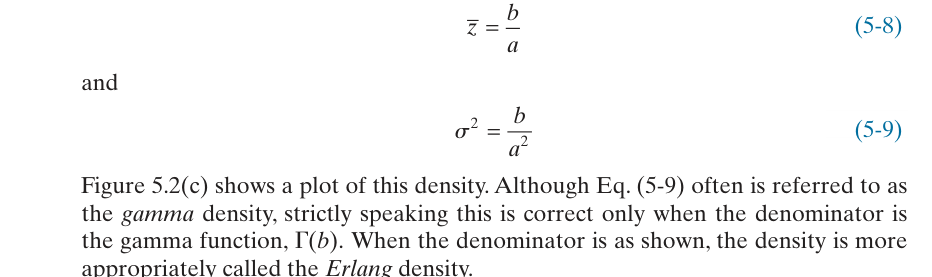
Fig. 50 تصویر رابطۀ شمارهدار (5-9) - واریانس توزیع ارلانگ از منبع علمی مبنا.#
توضیح: این رابطه «واریانس توزیع ارلانگ» را از پارامترهای توزیع بهدست میدهد. این ممان آماری برای برآورد شدت نویز و تنظیم فیلترهای تطبیقی بهکار میرود.
ارجاع به منبع: صفحهٔ 321 کتاب، فرمول (5-9).
(5-10) - چگالی احتمال نویز نمایی#

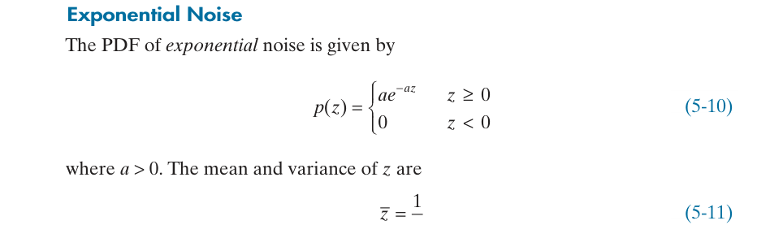
Fig. 51 تصویر رابطۀ شمارهدار (5-10) - چگالی احتمال نویز نمایی از منبع علمی مبنا.#
توضیح: این رابطه «چگالی احتمال نویز نمایی» را تعریف میکند. پارامترهای توزیع شکل هیستوگرام نویز را تعیین میکنند و از روی آنها میتوان نوع نویز و فیلتر مناسب را انتخاب کرد.
ارجاع به منبع: صفحهٔ 321 کتاب، فرمول (5-10).
(5-11) - میانگین توزیع نمایی#

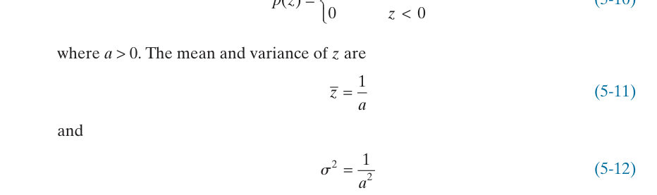
Fig. 52 تصویر رابطۀ شمارهدار (5-11) - میانگین توزیع نمایی از منبع علمی مبنا.#
توضیح: این رابطه «میانگین توزیع نمایی» را از پارامترهای توزیع بهدست میدهد. این ممان آماری برای برآورد شدت نویز و تنظیم فیلترهای تطبیقی بهکار میرود.
ارجاع به منبع: صفحهٔ 321 کتاب، فرمول (5-11).
(5-12) - واریانس توزیع نمایی#

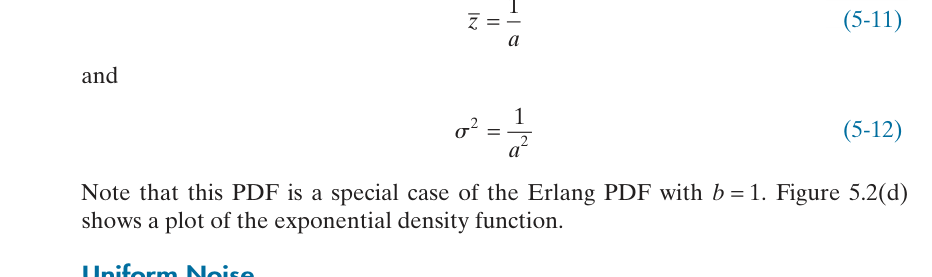
Fig. 53 تصویر رابطۀ شمارهدار (5-12) - واریانس توزیع نمایی از منبع علمی مبنا.#
توضیح: این رابطه «واریانس توزیع نمایی» را از پارامترهای توزیع بهدست میدهد. این ممان آماری برای برآورد شدت نویز و تنظیم فیلترهای تطبیقی بهکار میرود.
ارجاع به منبع: صفحهٔ 321 کتاب، فرمول (5-12).
(5-13) - چگالی احتمال نویز یکنواخت#

Fig. 54 تصویر رابطۀ شمارهدار (5-13) - چگالی احتمال نویز یکنواخت از منبع علمی مبنا.#
توضیح: این رابطه «چگالی احتمال نویز یکنواخت» را تعریف میکند. پارامترهای توزیع شکل هیستوگرام نویز را تعیین میکنند و از روی آنها میتوان نوع نویز و فیلتر مناسب را انتخاب کرد.
ارجاع به منبع: صفحهٔ 321 کتاب، فرمول (5-13).
(5-14) - میانگین توزیع یکنواخت#

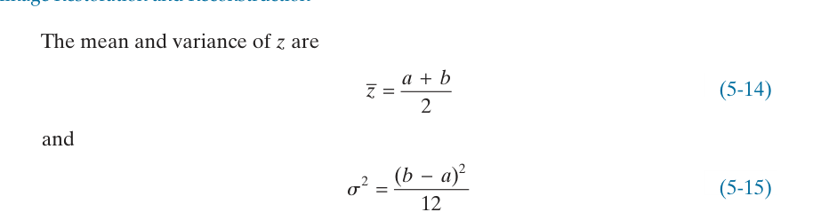
Fig. 55 تصویر رابطۀ شمارهدار (5-14) - میانگین توزیع یکنواخت از منبع علمی مبنا.#
توضیح: این رابطه «میانگین توزیع یکنواخت» را از پارامترهای توزیع بهدست میدهد. این ممان آماری برای برآورد شدت نویز و تنظیم فیلترهای تطبیقی بهکار میرود.
ارجاع به منبع: صفحهٔ 322 کتاب، فرمول (5-14).
(5-15) - واریانس توزیع یکنواخت#

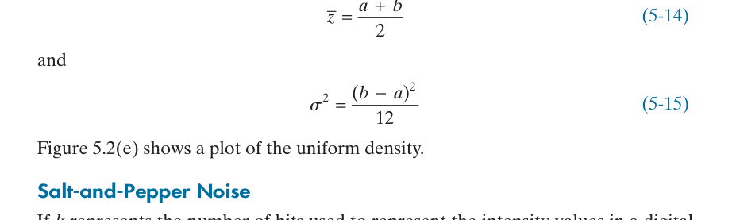
Fig. 56 تصویر رابطۀ شمارهدار (5-15) - واریانس توزیع یکنواخت از منبع علمی مبنا.#
توضیح: این رابطه «واریانس توزیع یکنواخت» را از پارامترهای توزیع بهدست میدهد. این ممان آماری برای برآورد شدت نویز و تنظیم فیلترهای تطبیقی بهکار میرود.
ارجاع به منبع: صفحهٔ 322 کتاب، فرمول (5-15).
(5-16) - چگالی احتمال نویز نمکوفلفل#
مدل احتمال نویز نمکوفلفل: $\( p(z)= \begin{cases} P_a,& z=a,\\ P_b,& z=b,\\ 0,& \text{در غیر این صورت}. \end{cases} \)$

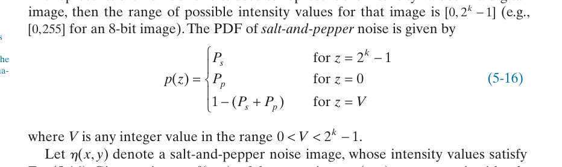
Fig. 57 تصویر رابطۀ شمارهدار (5-16) - چگالی احتمال نویز نمکوفلفل از منبع علمی مبنا.#
توضیح: در نویز نمکوفلفل فقط دو شدت ویژه احتمال غیرصفر دارند: یک مقدار بسیار تیره (pepper) و یک مقدار بسیار روشن (salt). همین گسستهبودن علت کارایی فیلتر میانه است.
ارجاع به منبع: صفحهٔ 322 کتاب، فرمول (5-16).
(5-17) - میانگین نویز نمکوفلفل#

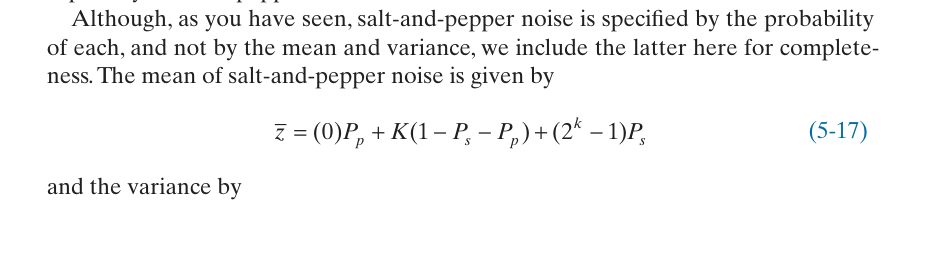
Fig. 58 تصویر رابطۀ شمارهدار (5-17) - میانگین نویز نمکوفلفل از منبع علمی مبنا.#
توضیح: این رابطه «میانگین نویز نمکوفلفل» را از پارامترهای توزیع بهدست میدهد. این ممان آماری برای برآورد شدت نویز و تنظیم فیلترهای تطبیقی بهکار میرود.
ارجاع به منبع: صفحهٔ 322 کتاب، فرمول (5-17).
(5-18) - واریانس نویز نمکوفلفل#

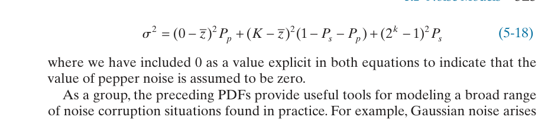
Fig. 59 تصویر رابطۀ شمارهدار (5-18) - واریانس نویز نمکوفلفل از منبع علمی مبنا.#
توضیح: این رابطه «واریانس نویز نمکوفلفل» را از پارامترهای توزیع بهدست میدهد. این ممان آماری برای برآورد شدت نویز و تنظیم فیلترهای تطبیقی بهکار میرود.
ارجاع به منبع: صفحهٔ 323 کتاب، فرمول (5-18).

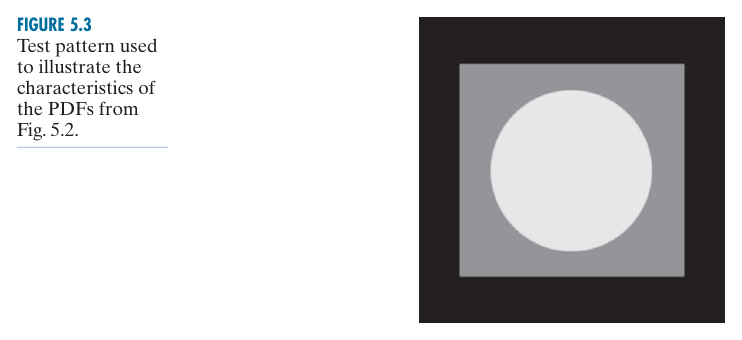
Fig. 60 شکل 5.3. الگوی آزمون دارای نواحی تقریباً یکنواخت و مرزهای واضح است؛ بنابراین هم اثر نویز روی هیستوگرام و هم اثر فیلتر روی لبهها را میتوان بهوضوح دید.#
ارجاع به منبع: صفحهٔ 323 کتاب، شکل 5.3.

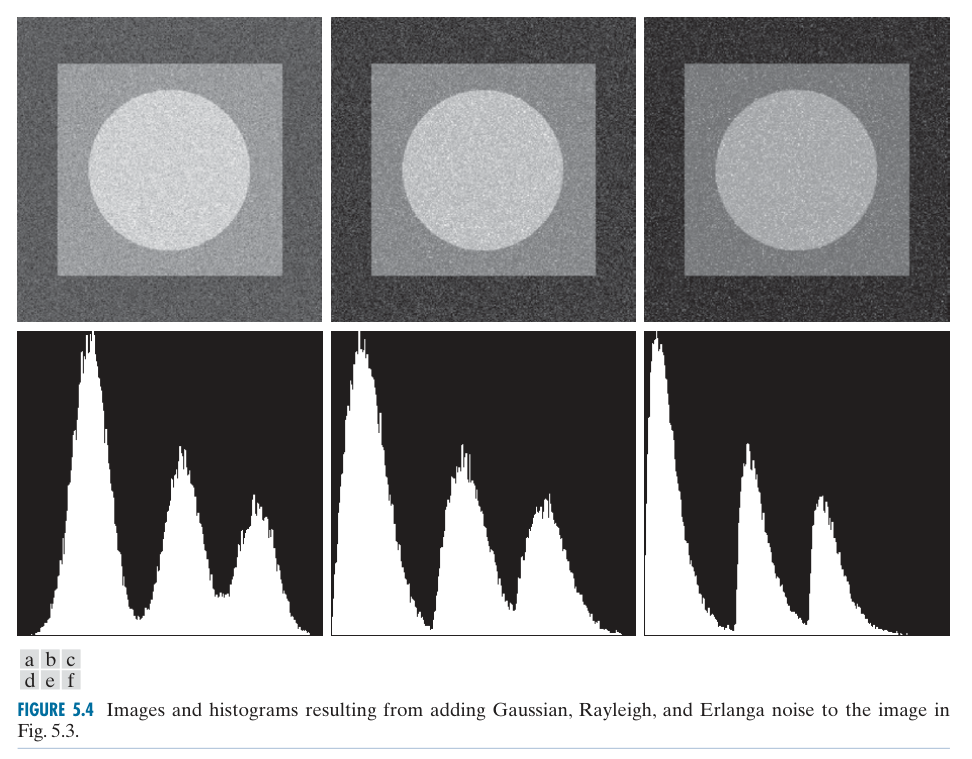
Fig. 61 شکل 5.4-a. با افزودن انواع نویز به یک تصویر ثابت، تفاوت «ظاهر مکانی» و «هیستوگرام» آشکار میشود. نکتهٔ مهم این است که چند نویز میتوانند از نظر بصری شبیه باشند ولی هیستوگرامهای بسیار متفاوتی داشته باشند؛ نمکوفلفل استثنای واضح است.#
ارجاع به منبع: صفحهٔ 324 کتاب، شکل 5.4-a.

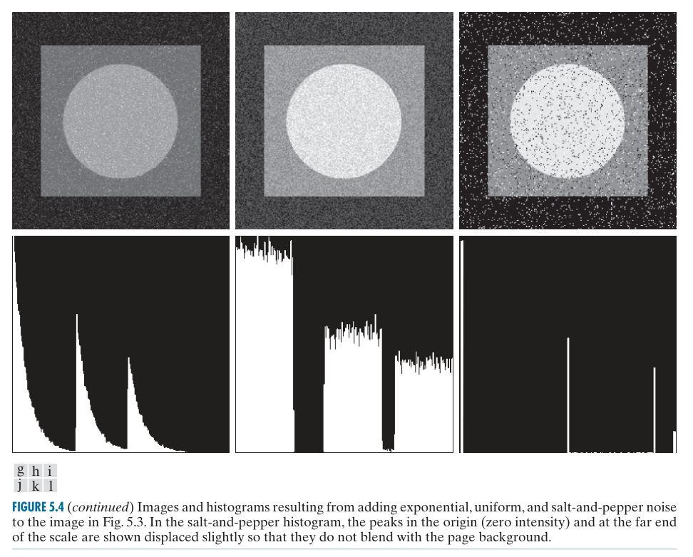
Fig. 62 شکل 5.4-b. با افزودن انواع نویز به یک تصویر ثابت، تفاوت «ظاهر مکانی» و «هیستوگرام» آشکار میشود. نکتهٔ مهم این است که چند نویز میتوانند از نظر بصری شبیه باشند ولی هیستوگرامهای بسیار متفاوتی داشته باشند؛ نمکوفلفل استثنای واضح است. این بخش ادامهٔ همان مقایسه و شامل نویز نمایی، یکنواخت و نمکوفلفل است.#
ارجاع به منبع: صفحهٔ 325 کتاب، شکل 5.4-b.
(5-19) - برآورد میانگین از هیستوگرام محلی#

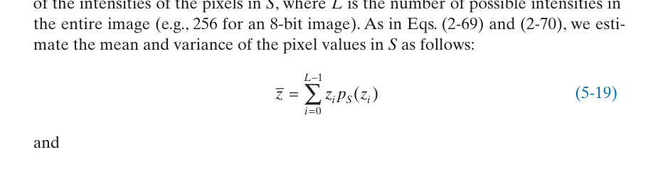
Fig. 63 تصویر رابطۀ شمارهدار (5-19) - برآورد میانگین از هیستوگرام محلی از منبع علمی مبنا.#
توضیح: این رابطه «برآورد میانگین از هیستوگرام محلی» را مستقیماً از هیستوگرام یک ناحیهٔ تقریباً یکنواخت برآورد میکند؛ روشی عملی وقتی نمونهٔ نویز مستقل در اختیار نداریم.
ارجاع به منبع: صفحهٔ 326 کتاب، فرمول (5-19).

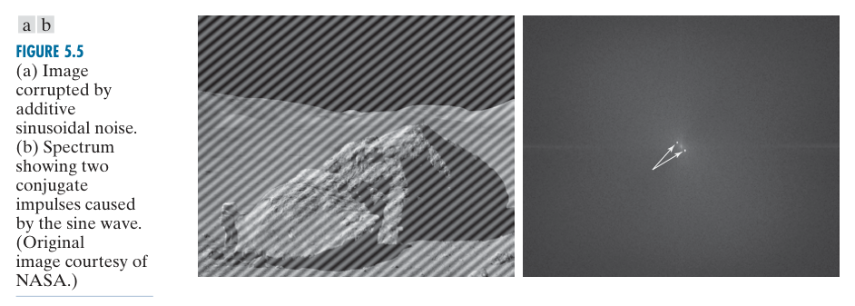
Fig. 64 شکل 5.5. یک سینوس دوبعدی در مکان به دو ضربهٔ مزدوج در طیف تبدیل میشود. این تصویر پیوند مستقیم بین تداخل تناوبی و ناچفیلتر را بهصورت شهودی نشان میدهد.#
ارجاع به منبع: صفحهٔ 326 کتاب، شکل 5.5.
(5-20) - برآورد واریانس از هیستوگرام محلی#

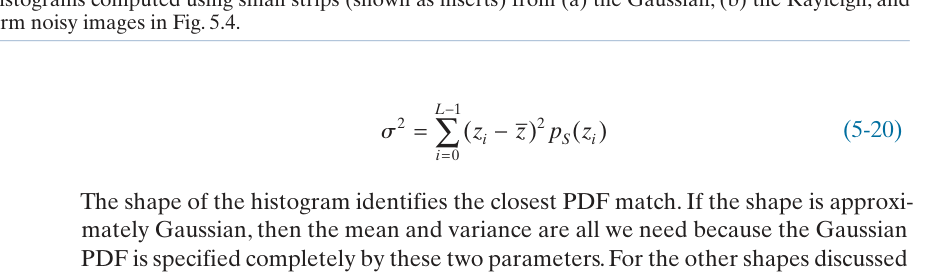
Fig. 65 تصویر رابطۀ شمارهدار (5-20) - برآورد واریانس از هیستوگرام محلی از منبع علمی مبنا.#
توضیح: این رابطه «برآورد واریانس از هیستوگرام محلی» را مستقیماً از هیستوگرام یک ناحیهٔ تقریباً یکنواخت برآورد میکند؛ روشی عملی وقتی نمونهٔ نویز مستقل در اختیار نداریم.
ارجاع به منبع: صفحهٔ 327 کتاب، فرمول (5-20).

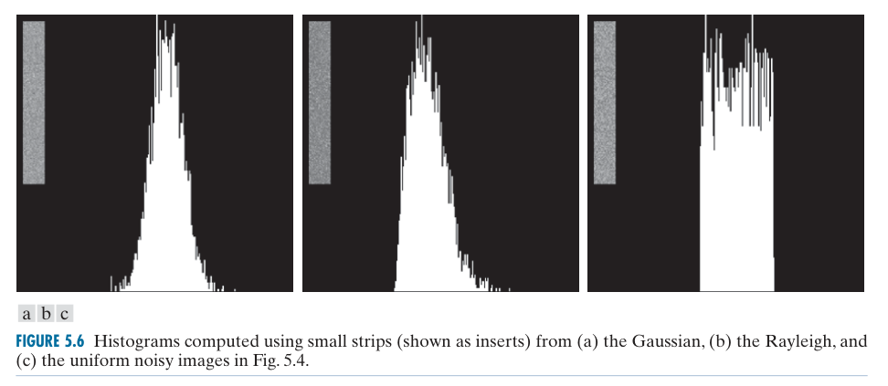
Fig. 66 شکل 5.6. هیستوگرام از نوارهای کوچک و نسبتاً یکنواخت تصویر گرفته شده است تا سهم ساختار تصویر کم شود و شکل PDF نویز بهتر دیده شود. این همان ایدهٔ عملی تخمین پارامترهای نویز از خود تصویر است.#
ارجاع به منبع: صفحهٔ 327 کتاب، شکل 5.6.
جمعبندی این بخش#
نوع توزیع نویز، میانگین و واریانس آن اطلاعات طراحی فیلتر را فراهم میکنند. همیشه پیش از انتخاب فیلتر، از ناحیههای یکنواخت تصویر برای برآورد آمار نویز استفاده کنید.
ترمیم در حضور فقط نویز: فیلترگذاری مکانی#

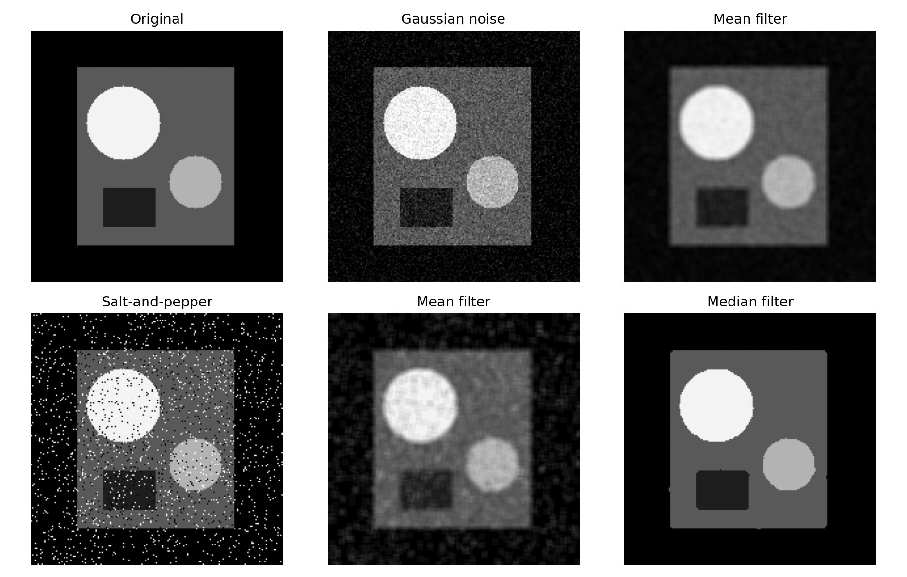
Fig. 67 آزمایش بازتولیدشدنی: مقایسۀ نویز گاوسی و نمکوفلفل و رفتار فیلتر میانگین و میانه. کد تولید این شکل در فایلهای اجرایی فصل قرار دارد.#
وقتی تابع تخریب اپتیکی یا حرکتی وجود ندارد و تنها نویز جمعشونده داریم، مسئله به حذف نویز در حوزهٔ مکان تبدیل میشود. خانوادهٔ فیلترهای میانگین، آماری ترتیبی و تطبیقی مقایسه میشوند. پیام کلیدی این بخش این است که نوع نویز تعیین میکند کدام میانگین یا آمارهٔ ترتیبی مناسبتر است؛ یک فیلتر واحد برای همهٔ نویزها وجود ندارد.
نکتهٔ تدریس
در تدریس این بخش ابتدا رابطهٔ علت و معلولی را بگویید و سپس به فرمول بروید. دانشجو باید بداند هر پارامتر چه اثر قابل مشاهدهای در شکل دارد؛ فرمول بدون اتصال به تصویر بهسرعت تبدیل به حفظیات میشود.
(5-21) - مدل نویز جمعشونده در مکان#

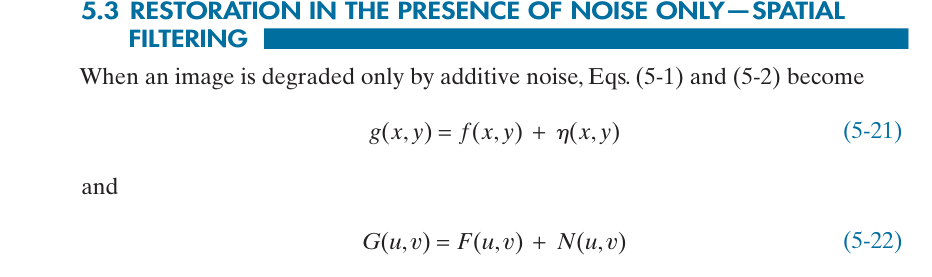
Fig. 68 تصویر رابطۀ شمارهدار (5-21) - مدل نویز جمعشونده در مکان از منبع علمی مبنا.#
توضیح: این رابطه «مدل نویز جمعشونده در مکان» است. پاسخ فیلتر از پیکسلهای همسایگی \(S_{xy}\) ساخته میشود؛ تفاوت این خانوادهها در نوع میانگین/رتبهبندی و در نتیجه حساسیت آنها به outlierهای روشن و تیره است.
ارجاع به منبع: صفحهٔ 327 کتاب، فرمول (5-21).
(5-22) - مدل نویز جمعشونده در فرکانس#

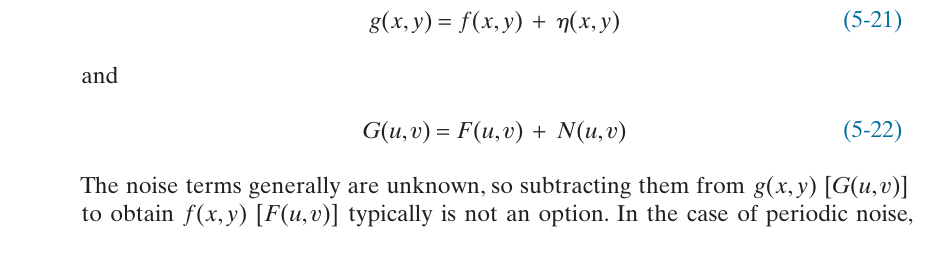
Fig. 69 تصویر رابطۀ شمارهدار (5-22) - مدل نویز جمعشونده در فرکانس از منبع علمی مبنا.#
توضیح: این رابطه «مدل نویز جمعشونده در فرکانس» است. پاسخ فیلتر از پیکسلهای همسایگی \(S_{xy}\) ساخته میشود؛ تفاوت این خانوادهها در نوع میانگین/رتبهبندی و در نتیجه حساسیت آنها به outlierهای روشن و تیره است.
ارجاع به منبع: صفحهٔ 327 کتاب، فرمول (5-22).
(5-23) - فیلتر میانگین حسابی#
اگر \(S_{xy}\) یک همسایگی \(m\times n\) باشد، میانگین حسابی: $\( \hat f(x,y)=\frac{1}{mn}\sum_{(s,t)\in S_{xy}} g(s,t). \)$

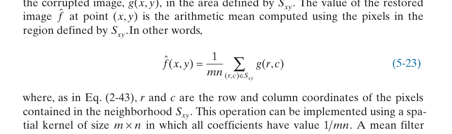
Fig. 70 تصویر رابطۀ شمارهدار (5-23) - فیلتر میانگین حسابی از منبع علمی مبنا.#
توضیح: هر پیکسل با متوسط همسایگی جایگزین میشود. کاهش واریانس نویز بهای خود را با محوشدن لبهها و جزئیات ریز میپردازد.
ارجاع به منبع: صفحهٔ 328 کتاب، فرمول (5-23).
(5-24) - فیلتر میانگین هندسی مکانی#
میانگین هندسی: $\( \hat f(x,y)= \left[\prod_{(s,t)\in S_{xy}}g(s,t)\right]^{1/(mn)}. \)$

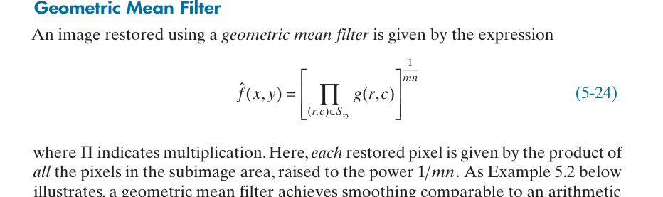
Fig. 71 تصویر رابطۀ شمارهدار (5-24) - فیلتر میانگین هندسی مکانی از منبع علمی مبنا.#
توضیح: میانگین هندسی نسبت به میانگین حسابی معمولاً جزئیات را بهتر حفظ میکند و برای برخی نویزهای ضربی/گاوسی رفتار مناسبتری دارد.
ارجاع به منبع: صفحهٔ 328 کتاب، فرمول (5-24).
(5-25) - فیلتر میانگین هارمونیک#
میانگین هارمونیک: $\( \hat f(x,y)= \frac{mn}{\displaystyle\sum_{(s,t)\in S_{xy}}\frac{1}{g(s,t)}}. \)$

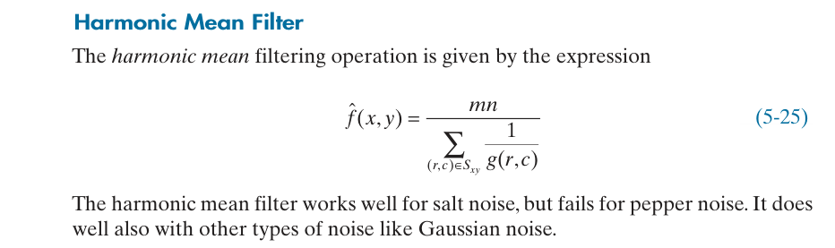
Fig. 72 تصویر رابطۀ شمارهدار (5-25) - فیلتر میانگین هارمونیک از منبع علمی مبنا.#
توضیح: میانگین هارمونیک در برابر نقاط روشن شدید مقاومتر است، اما برای نویز pepper مناسب نیست چون وجود صفر در مخرج مشکلساز میشود.
ارجاع به منبع: صفحهٔ 329 کتاب، فرمول (5-25).
(5-26) - فیلتر میانگین پادهارمونیک#
میانگین پادهارمونیک با مرتبه \(Q\): $\( \hat f(x,y)= \frac{\displaystyle\sum_{(s,t)\in S_{xy}}g(s,t)^{Q+1}} {\displaystyle\sum_{(s,t)\in S_{xy}}g(s,t)^Q}. \)$

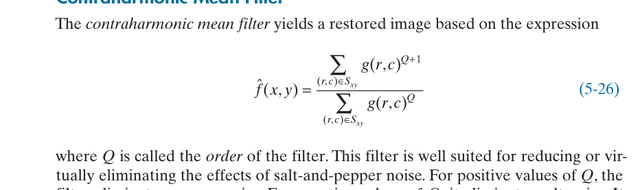
Fig. 73 تصویر رابطۀ شمارهدار (5-26) - فیلتر میانگین پادهارمونیک از منبع علمی مبنا.#
توضیح: پارامتر \(Q\) قطبیت فیلتر را تعیین میکند: \(Q>0\) برای pepper و \(Q<0\) برای salt. انتخاب علامت اشتباه میتواند نویز را تشدید کند.
ارجاع به منبع: صفحهٔ 329 کتاب، فرمول (5-26).
(5-27) - فیلتر میانه#
فیلتر میانه: $\( \hat f(x,y)=\operatorname{median}_{(s,t)\in S_{xy}}\{g(s,t)\}. \)$

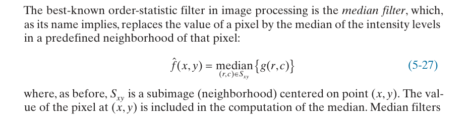
Fig. 74 تصویر رابطۀ شمارهدار (5-27) - فیلتر میانه از منبع علمی مبنا.#
توضیح: میانه یک آمارهٔ مقاوم است؛ بهجای میانگینگیری عددی، مقدار میانیِ دادههای مرتبشده را انتخاب میکند و به همین دلیل لبهها را بهتر از فیلتر خطی حفظ میکند.
ارجاع به منبع: صفحهٔ 330 کتاب، فرمول (5-27).

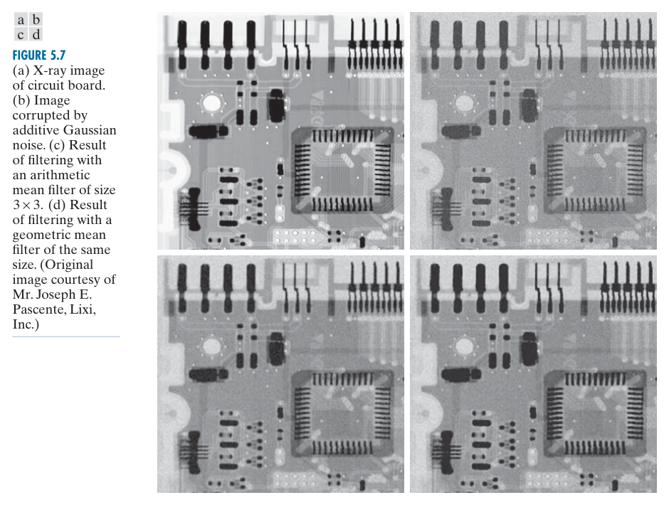
Fig. 75 شکل 5.7. میانگین حسابی و هندسی روی نویز گاوسی مقایسه میشوند. هر دو نویز را کاهش میدهند، اما میانگین حسابی معمولاً محوشدگی بیشتری ایجاد میکند و میانگین هندسی بخشی از جزئیات را بهتر نگه میدارد.#
ارجاع به منبع: صفحهٔ 330 کتاب، شکل 5.7.

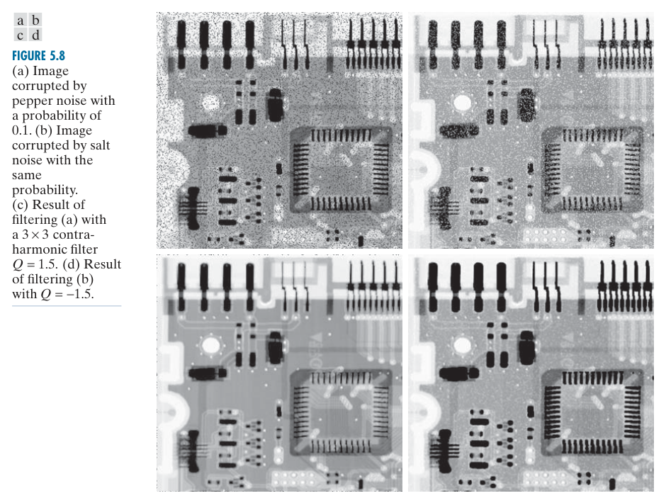
Fig. 76 شکل 5.8. علامت \(Q\) در فیلتر پادهارمونیک را به تصویر وصل کنید: \(Q>0\) لکههای تیرهٔ pepper را بهتر حذف میکند و \(Q<0\) لکههای روشن salt را. این شکل بهترین شاهد بصری برای نقش علامت \(Q\) است.#
ارجاع به منبع: صفحهٔ 331 کتاب، شکل 5.8.

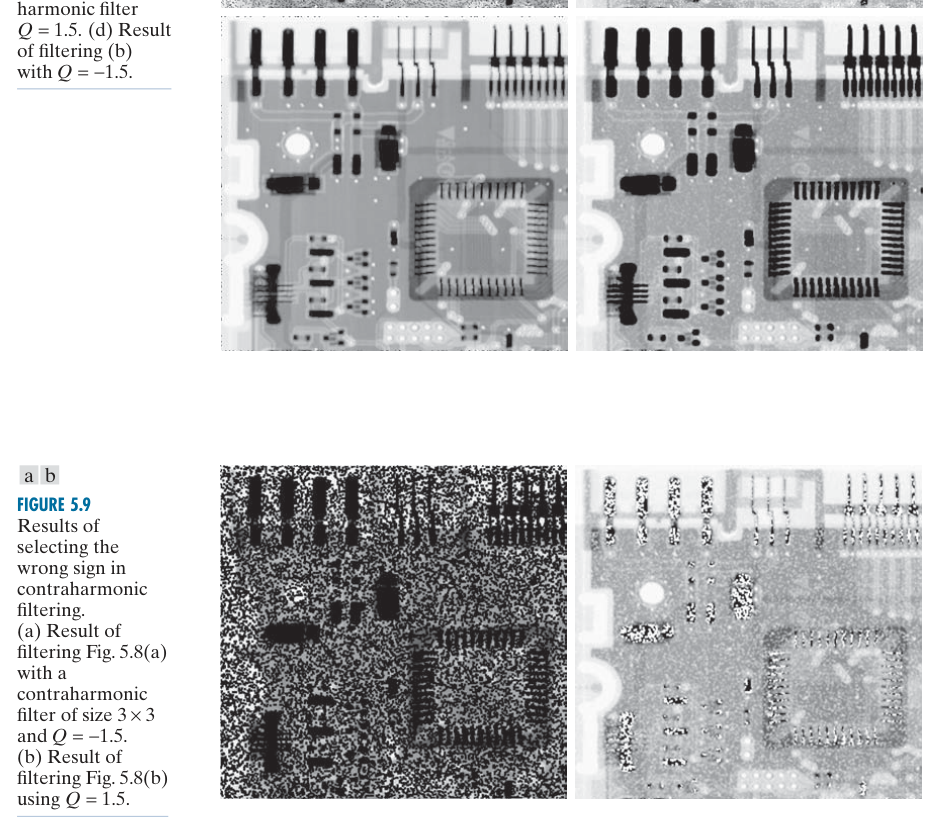
Fig. 77 شکل 5.9. وقتی علامت \(Q\) برعکس انتخاب شود، فیلتر نهتنها مناسب نیست بلکه artifactهای شدید ایجاد میکند. این شکل یادآور میشود پارامتر فیلتر باید با مدل نویز سازگار باشد.#
ارجاع به منبع: صفحهٔ 331 کتاب، شکل 5.9.
(5-28) - فیلتر بیشینه#

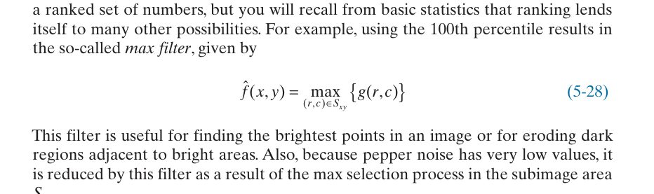
Fig. 78 تصویر رابطۀ شمارهدار (5-28) - فیلتر بیشینه از منبع علمی مبنا.#
توضیح: این رابطه «فیلتر بیشینه» است. پاسخ فیلتر از پیکسلهای همسایگی \(S_{xy}\) ساخته میشود؛ تفاوت این خانوادهها در نوع میانگین/رتبهبندی و در نتیجه حساسیت آنها به outlierهای روشن و تیره است.
ارجاع به منبع: صفحهٔ 332 کتاب، فرمول (5-28).
(5-29) - فیلتر کمینه#

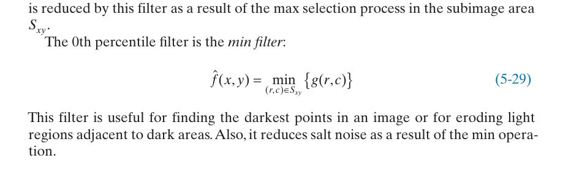
Fig. 79 تصویر رابطۀ شمارهدار (5-29) - فیلتر کمینه از منبع علمی مبنا.#
توضیح: این رابطه «فیلتر کمینه» است. پاسخ فیلتر از پیکسلهای همسایگی \(S_{xy}\) ساخته میشود؛ تفاوت این خانوادهها در نوع میانگین/رتبهبندی و در نتیجه حساسیت آنها به outlierهای روشن و تیره است.
ارجاع به منبع: صفحهٔ 332 کتاب، فرمول (5-29).
(5-30) - فیلتر نقطهٔ میانی#

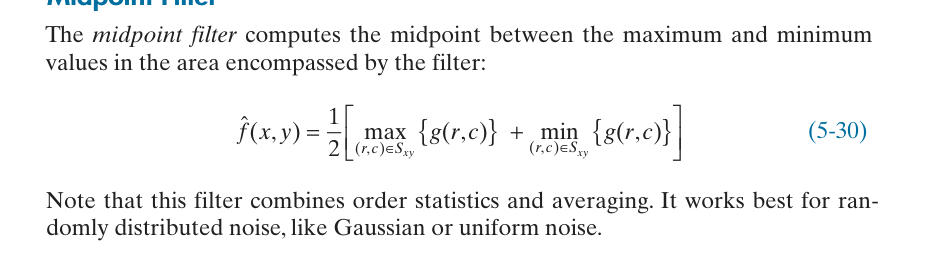
Fig. 80 تصویر رابطۀ شمارهدار (5-30) - فیلتر نقطهٔ میانی از منبع علمی مبنا.#
توضیح: این رابطه «فیلتر نقطهٔ میانی» است. پاسخ فیلتر از پیکسلهای همسایگی \(S_{xy}\) ساخته میشود؛ تفاوت این خانوادهها در نوع میانگین/رتبهبندی و در نتیجه حساسیت آنها به outlierهای روشن و تیره است.
ارجاع به منبع: صفحهٔ 332 کتاب، فرمول (5-30).
(5-31) - فیلتر میانگین آلفا-بریده#
در فیلتر آلفا-بریده، پس از حذف \(d/2\) مقدار کوچک و \(d/2\) مقدار بزرگ: $\( \hat f(x,y)=\frac{1}{mn-d}\sum_{r\in S_{xy}} g_r(s,t). \)$

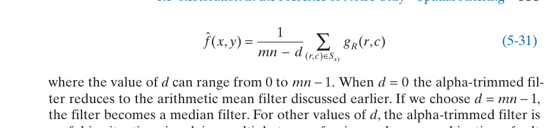
Fig. 81 تصویر رابطۀ شمارهدار (5-31) - فیلتر میانگین آلفا-بریده از منبع علمی مبنا.#
توضیح: ابتدا \(d/2\) مقدار کوچک و \(d/2\) مقدار بزرگ حذف میشوند، سپس از بقیه میانگین گرفته میشود؛ بنابراین فیلتر بین میانگین و میانه قابل تنظیم است.
ارجاع به منبع: صفحهٔ 333 کتاب، فرمول (5-31).

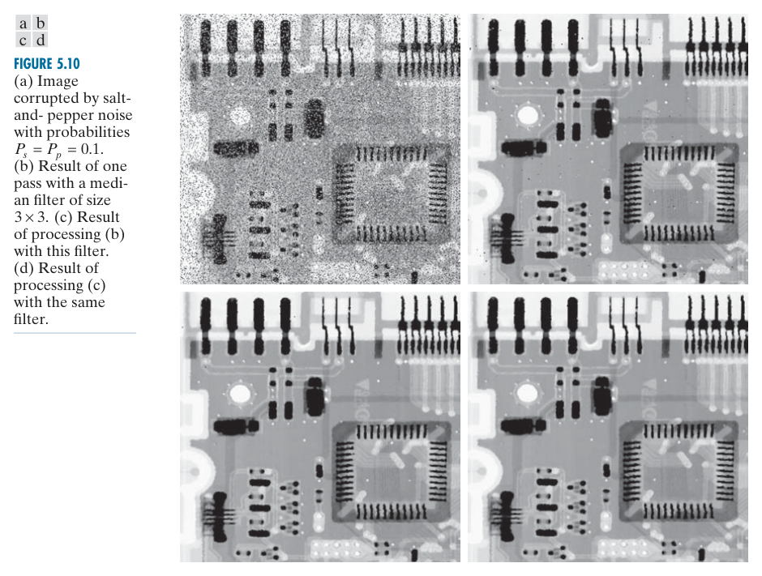
Fig. 82 شکل 5.10. چند عبور پیاپی فیلتر میانه نویز نمکوفلفل را کم میکند، اما هر عبور اضافی خطر حذف جزئیات ریز و گردشدن گوشهها را افزایش میدهد.#
ارجاع به منبع: صفحهٔ 334 کتاب، شکل 5.10.

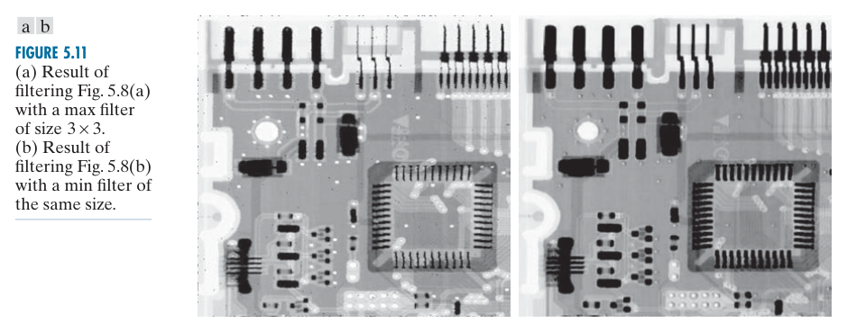
Fig. 83 شکل 5.11. فیلتر max برای pepper و فیلتر min برای salt مؤثر است، چون بهترتیب مقادیر بسیار کوچک و بسیار بزرگ را در همسایگی کنار میزنند. در عوض شکل اشیای تیره/روشن را نیز میتوانند تغییر دهند.#
ارجاع به منبع: صفحهٔ 334 کتاب، شکل 5.11.

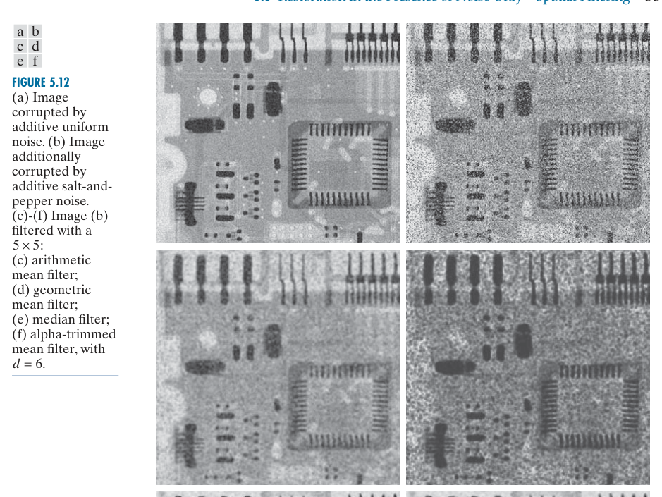
Fig. 84 شکل 5.12. یک نویز ترکیبی (یکنواخت + نمکوفلفل) معیار خوبی برای مقایسهٔ خانوادههاست. فیلتر alpha-trimmed در این حالت مزیت دارد چون هم outlierها را حذف میکند و هم از بقیه میانگین میگیرد.#
ارجاع به منبع: صفحهٔ 335 کتاب، شکل 5.12.
(5-32) - فیلتر تطبیقی کاهش نویز محلی#
فیلتر تطبیقی کاهش نویز محلی: $\( \hat f(x,y)=g(x,y)- \frac{\sigma_\eta^2}{\sigma_L^2} \big[g(x,y)-m_L\big]. \)\( در این رابطه \)m_L\( و \)\sigma_L^2\( میانگین و واریانس محلی و \)\sigma_\eta^2$ واریانس نویز است.

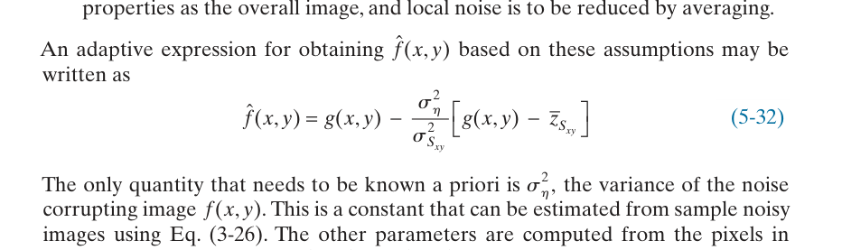
Fig. 85 تصویر رابطۀ شمارهدار (5-32) - فیلتر تطبیقی کاهش نویز محلی از منبع علمی مبنا.#
توضیح: اصلاح هر پیکسل بر اساس نسبت واریانس نویز به واریانس محلی تصویر تنظیم میشود: در نواحی تخت صافسازی بیشتر و در لبهها/جزئیات صافسازی کمتر است.
ارجاع به منبع: صفحهٔ 336 کتاب، فرمول (5-32).

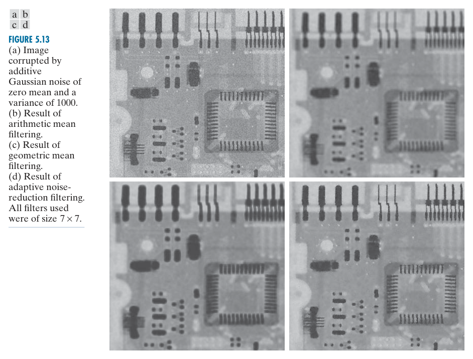
Fig. 86 شکل 5.13. فیلتر تطبیقی کاهش نویز محلی نسبت به میانگینهای ثابت، لبهها و ساختار برد را بهتر حفظ میکند. دلیل، استفاده از واریانس محلی برای تعیین مقدار صافسازی است.#
ارجاع به منبع: صفحهٔ 337 کتاب، شکل 5.13.

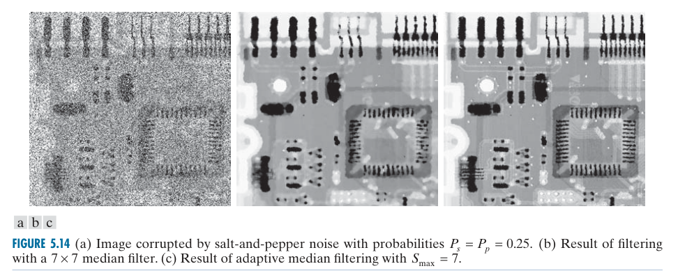
Fig. 87 شکل 5.14. در چگالی بالای نمکوفلفل، یک median ثابت 7×7 جزئیات زیادی را خراب میکند؛ median تطبیقی اندازهٔ پنجره را فقط در صورت نیاز بزرگ میکند و جزئیات را بهتر نگه میدارد.#
ارجاع به منبع: صفحهٔ 340 کتاب، شکل 5.14.
جمعبندی این بخش#
میانگینها برای نویزهای پخششده مناسباند، فیلترهای ترتیبی برای impulse noise قویترند و فیلترهای تطبیقی در حفظ جزئیات مزیت دارند.
کاهش نویز تناوبی در حوزهٔ فرکانس#
نویز تناوبی در طیف فوریه معمولاً بهصورت قلههای باریک و جفتهای مزدوج دیده میشود. فیلترهای ناچرد و ناچپَس برای حذف یا استخراج این مؤلفهها بهکار میروند. در ادامه، بهجای حذف کورِ نویز، یک روش وزندهی محلی ارائه میشود تا مؤلفهٔ استخراجشده فقط به میزانی از تصویر کم شود که واریانس محلی خروجی کمینه گردد.
نکتهٔ تدریس
در تدریس این بخش ابتدا رابطهٔ علت و معلولی را بگویید و سپس به فرمول بروید. دانشجو باید بداند هر پارامتر چه اثر قابل مشاهدهای در شکل دارد؛ فرمول بدون اتصال به تصویر بهسرعت تبدیل به حفظیات میشود.
(5-33) - ساخت فیلتر ناچرد چندگانه#

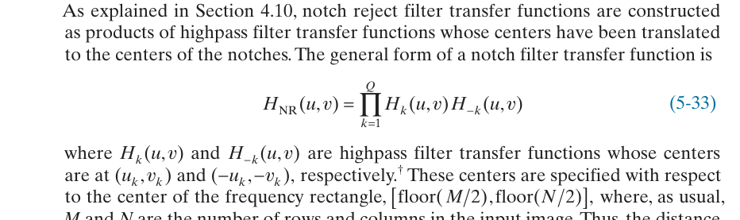
Fig. 88 تصویر رابطۀ شمارهدار (5-33) - ساخت فیلتر ناچرد چندگانه از منبع علمی مبنا.#
توضیح: چون مؤلفههای سینوسی حقیقی در DFT بهصورت جفتهای مزدوج ظاهر میشوند، ناچها نیز باید بهصورت جفت متقارن قرار گیرند.
ارجاع به منبع: صفحهٔ 341 کتاب، فرمول (5-33).
(5-34) - فاصله تا مرکز ناچ مثبت#

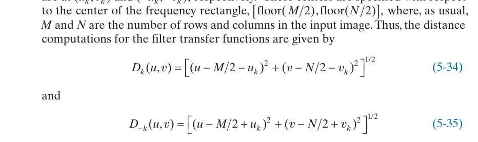
Fig. 89 تصویر رابطۀ شمارهدار (5-34) - فاصله تا مرکز ناچ مثبت از منبع علمی مبنا.#
توضیح: این گام «فاصله تا مرکز ناچ مثبت» را در طراحی/برآورد فیلتر تداخل تناوبی بیان میکند. هدف حفظ طیف مفید تصویر و جداسازی مؤلفههای باریک و قابلشناسایی نویز است.
ارجاع به منبع: صفحهٔ 341 کتاب، فرمول (5-34).
(5-35) - فاصله تا ناچ مزدوج#

Fig. 90 تصویر رابطۀ شمارهدار (5-35) - فاصله تا ناچ مزدوج از منبع علمی مبنا.#
توضیح: این گام «فاصله تا ناچ مزدوج» را در طراحی/برآورد فیلتر تداخل تناوبی بیان میکند. هدف حفظ طیف مفید تصویر و جداسازی مؤلفههای باریک و قابلشناسایی نویز است.
ارجاع به منبع: صفحهٔ 341 کتاب، فرمول (5-35).
(5-36) - نمونهٔ ناچرد باتروورث#

Fig. 91 تصویر رابطۀ شمارهدار (5-36) - نمونهٔ ناچرد باتروورث از منبع علمی مبنا.#
توضیح: این گام «نمونهٔ ناچرد باتروورث» را در طراحی/برآورد فیلتر تداخل تناوبی بیان میکند. هدف حفظ طیف مفید تصویر و جداسازی مؤلفههای باریک و قابلشناسایی نویز است.
ارجاع به منبع: صفحهٔ 341 کتاب، فرمول (5-36).
(5-37) - تبدیل ناچرد به ناچپَس#

Fig. 92 تصویر رابطۀ شمارهدار (5-37) - تبدیل ناچرد به ناچپَس از منبع علمی مبنا.#
توضیح: مکمل ناچرد، دقیقاً همان مؤلفههایی را عبور میدهد که قرار است حذف شوند؛ این ابزار برای مشاهده و برآورد خودِ الگوی تداخل بسیار مفید است.
ارجاع به منبع: صفحهٔ 341 کتاب، فرمول (5-37).

Fig. 93 شکل 5.15. سه شکل سهبعدی ناچرد ایدهآل، گاوسی و باتروورث را نشان میدهند. ایدهآل گذار ناگهانی و ringing بیشتر دارد؛ گاوسی نرمترین گذار را دارد؛ باتروورث بین این دو قابل تنظیم است.#
ارجاع به منبع: صفحهٔ 342 کتاب، شکل 5.15.

Fig. 94 شکل 5.16. فرایند کامل ناچفیلترگذاری دیده میشود: تصویر خراب، طیف با قلههای تداخل، محل ناچها و تصویر خروجی. این توالی را در ویدیو مرحلهبهمرحله توضیح دهید.#
ارجاع به منبع: صفحهٔ 343 کتاب، شکل 5.16.

Fig. 95 شکل 5.17. ناچپَس دقیقاً مؤلفهای را که ناچرد حذف میکند استخراج کرده است؛ نتیجه در مکان تقریباً یک الگوی سینوسی خالص است و صحت تشخیص قلههای طیفی را تأیید میکند.#
ارجاع به منبع: صفحهٔ 343 کتاب، شکل 5.17.

Fig. 96 شکل 5.18. در تصویر ماهوارهای، خطوط اسکن حسگر یک نویز تناوبی ساختاری ایجاد کردهاند. طیف جهت و فرکانس این خطوط را آشکار میکند و ناچرد نتیجهٔ بصری را بهطور محسوسی بهبود میدهد.#
ارجاع به منبع: صفحهٔ 344 کتاب، شکل 5.18.

Fig. 97 شکل 5.19. الگوی استخراجشده از شکل قبل نشان میدهد تداخل الزاماً یک سینوس ساده نیست؛ با چند مؤلفهٔ طیفی میتوان یک ساختار فضایی پیچیدهتر ساخت.#
ارجاع به منبع: صفحهٔ 344 کتاب، شکل 5.19.
(5-38) - استخراج طیف نویز تناوبی#

Fig. 98 تصویر رابطۀ شمارهدار (5-38) - استخراج طیف نویز تناوبی از منبع علمی مبنا.#
توضیح: این گام «استخراج طیف نویز تناوبی» را در طراحی/برآورد فیلتر تداخل تناوبی بیان میکند. هدف حفظ طیف مفید تصویر و جداسازی مؤلفههای باریک و قابلشناسایی نویز است.
ارجاع به منبع: صفحهٔ 345 کتاب، فرمول (5-38).
(5-39) - بازگردانی الگوی نویز به حوزهٔ مکان#

Fig. 99 تصویر رابطۀ شمارهدار (5-39) - بازگردانی الگوی نویز به حوزهٔ مکان از منبع علمی مبنا.#
توضیح: این گام «بازگردانی الگوی نویز به حوزهٔ مکان» را در طراحی/برآورد فیلتر تداخل تناوبی بیان میکند. هدف حفظ طیف مفید تصویر و جداسازی مؤلفههای باریک و قابلشناسایی نویز است.
ارجاع به منبع: صفحهٔ 345 کتاب، فرمول (5-39).
(5-40) - تفریق وزندار الگوی نویز#

Fig. 100 تصویر رابطۀ شمارهدار (5-40) - تفریق وزندار الگوی نویز از منبع علمی مبنا.#
توضیح: اگر \(\eta\) استخراجشده کامل نباشد، تفریق کامل آن میتواند جزئیات تصویر را هم حذف کند؛ وزن \(w(x,y)\) شدت تفریق را محلی تنظیم میکند.
ارجاع به منبع: صفحهٔ 345 کتاب، فرمول (5-40).
(5-41) - واریانس محلی تصویر برآوردشده#

Fig. 101 تصویر رابطۀ شمارهدار (5-41) - واریانس محلی تصویر برآوردشده از منبع علمی مبنا.#
توضیح: این گام «واریانس محلی تصویر برآوردشده» را در طراحی/برآورد فیلتر تداخل تناوبی بیان میکند. هدف حفظ طیف مفید تصویر و جداسازی مؤلفههای باریک و قابلشناسایی نویز است.
ارجاع به منبع: صفحهٔ 346 کتاب، فرمول (5-41).
(5-42) - میانگین محلی تصویر برآوردشده#

Fig. 102 تصویر رابطۀ شمارهدار (5-42) - میانگین محلی تصویر برآوردشده از منبع علمی مبنا.#
توضیح: این گام «میانگین محلی تصویر برآوردشده» را در طراحی/برآورد فیلتر تداخل تناوبی بیان میکند. هدف حفظ طیف مفید تصویر و جداسازی مؤلفههای باریک و قابلشناسایی نویز است.
ارجاع به منبع: صفحهٔ 346 کتاب، فرمول (5-42).
(5-43) - گسترش واریانس پس از جایگذاری مدل#

Fig. 103 تصویر رابطۀ شمارهدار (5-43) - گسترش واریانس پس از جایگذاری مدل از منبع علمی مبنا.#
توضیح: این گام «گسترش واریانس پس از جایگذاری مدل» را در طراحی/برآورد فیلتر تداخل تناوبی بیان میکند. هدف حفظ طیف مفید تصویر و جداسازی مؤلفههای باریک و قابلشناسایی نویز است.
ارجاع به منبع: صفحهٔ 346 کتاب، فرمول (5-43).
(5-44) - فرض ثابتبودن وزن در همسایگی#

Fig. 104 تصویر رابطۀ شمارهدار (5-44) - فرض ثابتبودن وزن در همسایگی از منبع علمی مبنا.#
توضیح: این گام «فرض ثابتبودن وزن در همسایگی» را در طراحی/برآورد فیلتر تداخل تناوبی بیان میکند. هدف حفظ طیف مفید تصویر و جداسازی مؤلفههای باریک و قابلشناسایی نویز است.
ارجاع به منبع: صفحهٔ 346 کتاب، فرمول (5-44).
(5-45) - سادهسازی میانگین حاصلضرب وزن و نویز#

Fig. 105 تصویر رابطۀ شمارهدار (5-45) - سادهسازی میانگین حاصلضرب وزن و نویز از منبع علمی مبنا.#
توضیح: این گام «سادهسازی میانگین حاصلضرب وزن و نویز» را در طراحی/برآورد فیلتر تداخل تناوبی بیان میکند. هدف حفظ طیف مفید تصویر و جداسازی مؤلفههای باریک و قابلشناسایی نویز است.
ارجاع به منبع: صفحهٔ 346 کتاب، فرمول (5-45).
(5-46) - صورت سادهشدهٔ واریانس#

Fig. 106 تصویر رابطۀ شمارهدار (5-46) - صورت سادهشدهٔ واریانس از منبع علمی مبنا.#
توضیح: این گام «صورت سادهشدهٔ واریانس» را در طراحی/برآورد فیلتر تداخل تناوبی بیان میکند. هدف حفظ طیف مفید تصویر و جداسازی مؤلفههای باریک و قابلشناسایی نویز است.
ارجاع به منبع: صفحهٔ 346 کتاب، فرمول (5-46).
(5-47) - شرط مشتق صفر برای وزن بهینه#

Fig. 107 تصویر رابطۀ شمارهدار (5-47) - شرط مشتق صفر برای وزن بهینه از منبع علمی مبنا.#
توضیح: این گام «شرط مشتق صفر برای وزن بهینه» را در طراحی/برآورد فیلتر تداخل تناوبی بیان میکند. هدف حفظ طیف مفید تصویر و جداسازی مؤلفههای باریک و قابلشناسایی نویز است.
ارجاع به منبع: صفحهٔ 347 کتاب، فرمول (5-47).
(5-48) - وزن بهینهٔ حذف تداخل#

Fig. 108 تصویر رابطۀ شمارهدار (5-48) - وزن بهینهٔ حذف تداخل از منبع علمی مبنا.#
توضیح: این رابطه وزن بهینه را از آمار محلی تصویر خراب و الگوی نویز استخراجشده میسازد؛ هدف کمینهکردن واریانس محلی خروجی است، نه صرفاً کمینهکردن انرژی نویز.
ارجاع به منبع: صفحهٔ 347 کتاب، فرمول (5-48).

Fig. 109 شکل 5.20. طیف تصویر مریخ دارای تداخلهای تناوبی متعدد است. این مثال انگیزهٔ روش بهینهترِ استخراج و تفریق وزندار نویز را فراهم میکند، چون انتخاب ناچهای دستی ممکن است اطلاعات واقعی را نیز حذف کند.#
ارجاع به منبع: صفحهٔ 347 کتاب، شکل 5.20.

Fig. 110 شکل 5.21. طیف بدون center کردن نمایش داده شده تا محل واقعی مؤلفهها نسبت به اندیسهای DFT روشن شود. این موضوع هنگام پیادهسازی بسیار مهم است چون اشتباه در shift باعث قرارگرفتن ناچ در جای نادرست میشود.#
ارجاع به منبع: صفحهٔ 348 کتاب، شکل 5.21.

Fig. 111 شکل 5.22. در چپ، طیف برآوردشدهٔ نویز و در راست، الگوی فضایی متناظر دیده میشود. این زوج نشان میدهد چگونه با IFFT از قلههای انتخابشده به یک الگوی تداخل قابلتفریق میرسیم.#
ارجاع به منبع: صفحهٔ 348 کتاب، شکل 5.22.

Fig. 112 شکل 5.23. تصویر ترمیمشده پس از تفریق وزندار نویز نشان میدهد میتوان تداخل تناوبی را بدون حذف گستردهٔ فرکانسهای تصویر کاهش داد.#
ارجاع به منبع: صفحهٔ 349 کتاب، شکل 5.23.
جمعبندی این بخش#
نویز تناوبی در فرکانس قابل جداسازی است، اما ناچهای بزرگ اطلاعات تصویر را هم حذف میکنند؛ استخراج نویز و تفریق وزندار راهی محافظهکارانهتر است.
تخریبهای خطی و ناوردا نسبت به مکان#
این بخش پلی بین پردازش تصویر و نظریهٔ سیستمهای خطی است. خطیبودن، جمعپذیری، همگنی و ناوردایی مکانی تعریف میشوند و سپس نشان داده میشود که یک سامانهٔ خطی و ناوردای مکانی بهطور کامل با پاسخ ضربه یا تابع پخش نقطهای (PSF) مشخص میشود. نتیجهٔ نهایی همان مدل کانولوشنیِ فصل است.
نکتهٔ تدریس
در تدریس این بخش ابتدا رابطهٔ علت و معلولی را بگویید و سپس به فرمول بروید. دانشجو باید بداند هر پارامتر چه اثر قابل مشاهدهای در شکل دارد؛ فرمول بدون اتصال به تصویر بهسرعت تبدیل به حفظیات میشود.
(5-49) - مدل عمومی عملگر تخریب#

Fig. 113 تصویر رابطۀ شمارهدار (5-49) - مدل عمومی عملگر تخریب از منبع علمی مبنا.#
توضیح: این رابطه «مدل عمومی عملگر تخریب» را در زنجیرهٔ استنتاج نظریهٔ سیستم خطی بیان میکند. این زنجیره در نهایت نشان میدهد که یک سامانهٔ خطی و ناوردای مکانی با PSF و کانولوشن توصیف میشود.
ارجاع به منبع: صفحهٔ 348 کتاب، فرمول (5-49).
(5-50) - تعریف خطیبودن عملگر#

Fig. 114 تصویر رابطۀ شمارهدار (5-50) - تعریف خطیبودن عملگر از منبع علمی مبنا.#
توضیح: خطیبودن یعنی پاسخ به ترکیب خطی ورودیها برابر همان ترکیب خطی پاسخهاست. این فرض اجازه میدهد از ابزارهای قدرتمند نظریهٔ سیستمهای خطی استفاده کنیم.
ارجاع به منبع: صفحهٔ 349 کتاب، فرمول (5-50).
(5-51) - خاصیت جمعپذیری#

Fig. 115 تصویر رابطۀ شمارهدار (5-51) - خاصیت جمعپذیری از منبع علمی مبنا.#
توضیح: این رابطه «خاصیت جمعپذیری» را در زنجیرهٔ استنتاج نظریهٔ سیستم خطی بیان میکند. این زنجیره در نهایت نشان میدهد که یک سامانهٔ خطی و ناوردای مکانی با PSF و کانولوشن توصیف میشود.
ارجاع به منبع: صفحهٔ 349 کتاب، فرمول (5-51).
(5-52) - خاصیت همگنی#

Fig. 116 تصویر رابطۀ شمارهدار (5-52) - خاصیت همگنی از منبع علمی مبنا.#
توضیح: این رابطه «خاصیت همگنی» را در زنجیرهٔ استنتاج نظریهٔ سیستم خطی بیان میکند. این زنجیره در نهایت نشان میدهد که یک سامانهٔ خطی و ناوردای مکانی با PSF و کانولوشن توصیف میشود.
ارجاع به منبع: صفحهٔ 349 کتاب، فرمول (5-52).
(5-53) - ناوردایی نسبت به انتقال#

Fig. 117 تصویر رابطۀ شمارهدار (5-53) - ناوردایی نسبت به انتقال از منبع علمی مبنا.#
توضیح: اگر ورودی را جابهجا کنیم، خروجی نیز فقط به همان مقدار جابهجا میشود و شکل پاسخ تغییر نمیکند. این شرط برای تبدیل پاسخ ضربه به یک کانولوشن ضروری است.
ارجاع به منبع: صفحهٔ 349 کتاب، فرمول (5-53).
(5-54) - نمایش تصویر با ضربههای دیراک#

Fig. 118 تصویر رابطۀ شمارهدار (5-54) - نمایش تصویر با ضربههای دیراک از منبع علمی مبنا.#
توضیح: این رابطه «نمایش تصویر با ضربههای دیراک» را در زنجیرهٔ استنتاج نظریهٔ سیستم خطی بیان میکند. این زنجیره در نهایت نشان میدهد که یک سامانهٔ خطی و ناوردای مکانی با PSF و کانولوشن توصیف میشود.
ارجاع به منبع: صفحهٔ 350 کتاب، فرمول (5-54).
(5-55) - اعمال عملگر به نمایش ضربهای#

Fig. 119 تصویر رابطۀ شمارهدار (5-55) - اعمال عملگر به نمایش ضربهای از منبع علمی مبنا.#
توضیح: این رابطه «اعمال عملگر به نمایش ضربهای» را در زنجیرهٔ استنتاج نظریهٔ سیستم خطی بیان میکند. این زنجیره در نهایت نشان میدهد که یک سامانهٔ خطی و ناوردای مکانی با PSF و کانولوشن توصیف میشود.
ارجاع به منبع: صفحهٔ 350 کتاب، فرمول (5-55).
(5-56) - انتقال عملگر خطی به داخل انتگرال#

Fig. 120 تصویر رابطۀ شمارهدار (5-56) - انتقال عملگر خطی به داخل انتگرال از منبع علمی مبنا.#
توضیح: این رابطه «انتقال عملگر خطی به داخل انتگرال» را در زنجیرهٔ استنتاج نظریهٔ سیستم خطی بیان میکند. این زنجیره در نهایت نشان میدهد که یک سامانهٔ خطی و ناوردای مکانی با PSF و کانولوشن توصیف میشود.
ارجاع به منبع: صفحهٔ 350 کتاب، فرمول (5-56).
(5-57) - برهمنهی پاسخها#

Fig. 121 تصویر رابطۀ شمارهدار (5-57) - برهمنهی پاسخها از منبع علمی مبنا.#
توضیح: این رابطه «برهمنهی پاسخها» را در زنجیرهٔ استنتاج نظریهٔ سیستم خطی بیان میکند. این زنجیره در نهایت نشان میدهد که یک سامانهٔ خطی و ناوردای مکانی با PSF و کانولوشن توصیف میشود.
ارجاع به منبع: صفحهٔ 350 کتاب، فرمول (5-57).
(5-58) - تعریف پاسخ ضربه/PSF#

Fig. 122 تصویر رابطۀ شمارهدار (5-58) - تعریف پاسخ ضربه/PSF از منبع علمی مبنا.#
توضیح: در اپتیک، پاسخ به یک نقطهٔ نورانی «تابع پخش نقطهای» است. اگر PSF را بدانیم، سامانهٔ خطی را میشناسیم.
ارجاع به منبع: صفحهٔ 350 کتاب، فرمول (5-58).
(5-59) - انتگرال برهمنهی فردهلم#

Fig. 123 تصویر رابطۀ شمارهدار (5-59) - انتگرال برهمنهی فردهلم از منبع علمی مبنا.#
توضیح: این رابطه «انتگرال برهمنهی فردهلم» را در زنجیرهٔ استنتاج نظریهٔ سیستم خطی بیان میکند. این زنجیره در نهایت نشان میدهد که یک سامانهٔ خطی و ناوردای مکانی با PSF و کانولوشن توصیف میشود.
ارجاع به منبع: صفحهٔ 350 کتاب، فرمول (5-59).
(5-60) - پاسخ ضربه در سامانهٔ ناوردای مکانی#

Fig. 124 تصویر رابطۀ شمارهدار (5-60) - پاسخ ضربه در سامانهٔ ناوردای مکانی از منبع علمی مبنا.#
توضیح: این رابطه «پاسخ ضربه در سامانهٔ ناوردای مکانی» را در زنجیرهٔ استنتاج نظریهٔ سیستم خطی بیان میکند. این زنجیره در نهایت نشان میدهد که یک سامانهٔ خطی و ناوردای مکانی با PSF و کانولوشن توصیف میشود.
ارجاع به منبع: صفحهٔ 350 کتاب، فرمول (5-60).
(5-61) - فرم کانولوشن برای سامانهٔ LSI#
برای یک سامانهٔ خطی و ناوردای مکانی: $\( g(x,y)=h(x,y)*f(x,y). \)$

Fig. 125 تصویر رابطۀ شمارهدار (5-61) - فرم کانولوشن برای سامانهٔ LSI از منبع علمی مبنا.#
توضیح: این رابطه نتیجهٔ کلیدی بخش است: خروجی سامانهٔ خطی و ناوردای مکانی برابر کانولوشن تصویر با PSF است.
ارجاع به منبع: صفحهٔ 350 کتاب، فرمول (5-61).
(5-62) - سامانهٔ خطی مکانمتغیر با نویز#

Fig. 126 تصویر رابطۀ شمارهدار (5-62) - سامانهٔ خطی مکانمتغیر با نویز از منبع علمی مبنا.#
توضیح: این رابطه «سامانهٔ خطی مکانمتغیر با نویز» را در زنجیرهٔ استنتاج نظریهٔ سیستم خطی بیان میکند. این زنجیره در نهایت نشان میدهد که یک سامانهٔ خطی و ناوردای مکانی با PSF و کانولوشن توصیف میشود.
ارجاع به منبع: صفحهٔ 351 کتاب، فرمول (5-62).
(5-63) - سامانهٔ خطی ناوردای مکانی با نویز#

Fig. 127 تصویر رابطۀ شمارهدار (5-63) - سامانهٔ خطی ناوردای مکانی با نویز از منبع علمی مبنا.#
توضیح: این رابطه «سامانهٔ خطی ناوردای مکانی با نویز» را در زنجیرهٔ استنتاج نظریهٔ سیستم خطی بیان میکند. این زنجیره در نهایت نشان میدهد که یک سامانهٔ خطی و ناوردای مکانی با PSF و کانولوشن توصیف میشود.
ارجاع به منبع: صفحهٔ 351 کتاب، فرمول (5-63).
(5-64) - مدل کانولوشنی فشرده#
با افزودن نویز: $\( g(x,y)=h(x,y)*f(x,y)+\eta(x,y). \)$

Fig. 128 تصویر رابطۀ شمارهدار (5-64) - مدل کانولوشنی فشرده از منبع علمی مبنا.#
توضیح: این رابطه «مدل کانولوشنی فشرده» را در زنجیرهٔ استنتاج نظریهٔ سیستم خطی بیان میکند. این زنجیره در نهایت نشان میدهد که یک سامانهٔ خطی و ناوردای مکانی با PSF و کانولوشن توصیف میشود.
ارجاع به منبع: صفحهٔ 351 کتاب، فرمول (5-64).
(5-65) - مدل نهایی در حوزهٔ فرکانس#
و در حوزۀ فرکانس: $\( G(u,v)=H(u,v)F(u,v)+N(u,v). \)$

Fig. 129 تصویر رابطۀ شمارهدار (5-65) - مدل نهایی در حوزهٔ فرکانس از منبع علمی مبنا.#
توضیح: این همان مدل پایهٔ فصل در حوزهٔ فرکانس است و مبنای فیلتر معکوس، وینر و حداقل مربعات مقید قرار میگیرد.
ارجاع به منبع: صفحهٔ 351 کتاب، فرمول (5-65).
جمعبندی این بخش#
خطی + ناوردای مکانی مساوی است با «شناخت کامل سامانه از طریق PSF» و «نوشتن خروجی بهصورت کانولوشن». این نتیجه، زیربنای همهٔ فیلترهای بعدی است.
برآورد تابع تخریب#
تا اینجا فرض میکردیم تابع تخریب معلوم است؛ این بخش میپرسد در عمل چگونه آن را بهدست آوریم. سه راه مطرح میشود: مشاهدهٔ یک ناحیهٔ کوچک و قابلمدلسازی، آزمایش با یک ضربه/نقطهٔ نورانی، و استفاده از مدلهای فیزیکی. دو نمونهٔ مهم، آشفتگی جو و تاری حرکت یکنواخت هستند.
نکتهٔ تدریس
در تدریس این بخش ابتدا رابطهٔ علت و معلولی را بگویید و سپس به فرمول بروید. دانشجو باید بداند هر پارامتر چه اثر قابل مشاهدهای در شکل دارد؛ فرمول بدون اتصال به تصویر بهسرعت تبدیل به حفظیات میشود.
(5-66) - برآورد تابع تخریب از زیرتصویر#

Fig. 130 تصویر رابطۀ شمارهدار (5-66) - برآورد تابع تخریب از زیرتصویر از منبع علمی مبنا.#
توضیح: این رابطه «برآورد تابع تخریب از زیرتصویر» را برای تخمین یا مدلسازی تابع تخریب ارائه میکند. نکتهٔ عملی آن است که هرچه مدل \(H(u,v)\) دقیقتر باشد، ترمیم بعدی پایدارتر و قابلاعتمادتر است.
ارجاع به منبع: صفحهٔ 352 کتاب، فرمول (5-66).
(5-67) - برآورد تابع انتقال با ورودی ضربه#

Fig. 131 تصویر رابطۀ شمارهدار (5-67) - برآورد تابع انتقال با ورودی ضربه از منبع علمی مبنا.#
توضیح: این رابطه «برآورد تابع انتقال با ورودی ضربه» را برای تخمین یا مدلسازی تابع تخریب ارائه میکند. نکتهٔ عملی آن است که هرچه مدل \(H(u,v)\) دقیقتر باشد، ترمیم بعدی پایدارتر و قابلاعتمادتر است.
ارجاع به منبع: صفحهٔ 353 کتاب، فرمول (5-67).
(5-68) - مدل تاری ناشی از آشفتگی جو#
یک مدل متداول برای تاری ناشی از آشفتگی جو: $\( H(u,v)=\exp\!\left[-k\left(u^2+v^2\right)^{5/6}\right], \)\( که در آن \)k$ شدت آشفتگی را کنترل میکند.

Fig. 132 تصویر رابطۀ شمارهدار (5-68) - مدل تاری ناشی از آشفتگی جو از منبع علمی مبنا.#
توضیح: پارامتر \(k\) شدت آشفتگی را کنترل میکند. با افزایش فرکانس مکانی، تابع انتقال سریعتر افت میکند؛ یعنی جزئیات ریز بیش از ساختارهای درشت از بین میروند.
ارجاع به منبع: صفحهٔ 353 کتاب، فرمول (5-68).

Fig. 133 شکل 5.24. یک نقطهٔ نورانی ایدهآل پس از عبور از سامانه به لکه تبدیل میشود. شکل لکه همان PSF است؛ اندازهگیری آن یکی از مستقیمترین روشهای شناسایی تابع تخریب است.#
ارجاع به منبع: صفحهٔ 353 کتاب، شکل 5.24.

Fig. 134 شکل 5.25. مدل آشفتگی جو با چند مقدار \(k\) مقایسه شده است. هرچه \(k\) بزرگتر شود، مؤلفههای فرکانس بالا بیشتر تضعیف و تصویر نرمتر/تارتر میشود.#
ارجاع به منبع: صفحهٔ 354 کتاب، شکل 5.25.
(5-69) - مدل زمانی تشکیل تصویر در حضور حرکت#

Fig. 135 تصویر رابطۀ شمارهدار (5-69) - مدل زمانی تشکیل تصویر در حضور حرکت از منبع علمی مبنا.#
توضیح: این رابطه «مدل زمانی تشکیل تصویر در حضور حرکت» را برای تخمین یا مدلسازی تابع تخریب ارائه میکند. نکتهٔ عملی آن است که هرچه مدل \(H(u,v)\) دقیقتر باشد، ترمیم بعدی پایدارتر و قابلاعتمادتر است.
ارجاع به منبع: صفحهٔ 355 کتاب، فرمول (5-69).
(5-70) - تبدیل فوریهٔ تصویر تاریدار#

Fig. 136 تصویر رابطۀ شمارهدار (5-70) - تبدیل فوریهٔ تصویر تاریدار از منبع علمی مبنا.#
توضیح: این رابطه «تبدیل فوریهٔ تصویر تاریدار» را برای تخمین یا مدلسازی تابع تخریب ارائه میکند. نکتهٔ عملی آن است که هرچه مدل \(H(u,v)\) دقیقتر باشد، ترمیم بعدی پایدارتر و قابلاعتمادتر است.
ارجاع به منبع: صفحهٔ 355 کتاب، فرمول (5-70).
(5-71) - جایگذاری مدل حرکت در تبدیل فوریه#

Fig. 137 تصویر رابطۀ شمارهدار (5-71) - جایگذاری مدل حرکت در تبدیل فوریه از منبع علمی مبنا.#
توضیح: این رابطه «جایگذاری مدل حرکت در تبدیل فوریه» را برای تخمین یا مدلسازی تابع تخریب ارائه میکند. نکتهٔ عملی آن است که هرچه مدل \(H(u,v)\) دقیقتر باشد، ترمیم بعدی پایدارتر و قابلاعتمادتر است.
ارجاع به منبع: صفحهٔ 355 کتاب، فرمول (5-71).
(5-72) - تغییر ترتیب انتگرالگیری#

Fig. 138 تصویر رابطۀ شمارهدار (5-72) - تغییر ترتیب انتگرالگیری از منبع علمی مبنا.#
توضیح: این رابطه «تغییر ترتیب انتگرالگیری» را برای تخمین یا مدلسازی تابع تخریب ارائه میکند. نکتهٔ عملی آن است که هرچه مدل \(H(u,v)\) دقیقتر باشد، ترمیم بعدی پایدارتر و قابلاعتمادتر است.
ارجاع به منبع: صفحهٔ 355 کتاب، فرمول (5-72).
(5-73) - جداکردن طیف تصویر اصلی#

Fig. 139 تصویر رابطۀ شمارهدار (5-73) - جداکردن طیف تصویر اصلی از منبع علمی مبنا.#
توضیح: این رابطه «جداکردن طیف تصویر اصلی» را برای تخمین یا مدلسازی تابع تخریب ارائه میکند. نکتهٔ عملی آن است که هرچه مدل \(H(u,v)\) دقیقتر باشد، ترمیم بعدی پایدارتر و قابلاعتمادتر است.
ارجاع به منبع: صفحهٔ 355 کتاب، فرمول (5-73).
(5-74) - تابع انتقال عمومی تاری حرکت#
برای حرکت انتقالی عمومی \(x_0(t),y_0(t)\) در بازۀ نوردهی \(T\): $\( H(u,v)=\int_0^T \exp\!\left[-j2\pi\big(ux_0(t)+vy_0(t)\big)\right]dt. \)$

Fig. 140 تصویر رابطۀ شمارهدار (5-74) - تابع انتقال عمومی تاری حرکت از منبع علمی مبنا.#
توضیح: این رابطه نشان میدهد تاری حرکت اساساً تبدیل فوریهٔ مسیر زمانی حرکت دوربین/صحنه است. دانستن \(x_0(t),y_0(t)\) یعنی دانستن تابع انتقال تاری.
ارجاع به منبع: صفحهٔ 355 کتاب، فرمول (5-74).
(5-75) - رابطهٔ ضربی طیفی در نبود نویز#

Fig. 141 تصویر رابطۀ شمارهدار (5-75) - رابطهٔ ضربی طیفی در نبود نویز از منبع علمی مبنا.#
توضیح: این رابطه «رابطهٔ ضربی طیفی در نبود نویز» را برای تخمین یا مدلسازی تابع تخریب ارائه میکند. نکتهٔ عملی آن است که هرچه مدل \(H(u,v)\) دقیقتر باشد، ترمیم بعدی پایدارتر و قابلاعتمادتر است.
ارجاع به منبع: صفحهٔ 355 کتاب، فرمول (5-75).
(5-76) - تابع انتقال حرکت یکنواخت در راستای x#

Fig. 142 تصویر رابطۀ شمارهدار (5-76) - تابع انتقال حرکت یکنواخت در راستای x از منبع علمی مبنا.#
توضیح: این رابطه «تابع انتقال حرکت یکنواخت در راستای x» را برای تخمین یا مدلسازی تابع تخریب ارائه میکند. نکتهٔ عملی آن است که هرچه مدل \(H(u,v)\) دقیقتر باشد، ترمیم بعدی پایدارتر و قابلاعتمادتر است.
ارجاع به منبع: صفحهٔ 355 کتاب، فرمول (5-76).
(5-77) - تابع انتقال حرکت یکنواخت دوبعدی#
اگر حرکت یکنواخت باشد، \(x_0(t)=at/T\) و \(y_0(t)=bt/T\): $\( H(u,v)= \frac{T}{\pi(ua+vb)} \sin\!\big[\pi(ua+vb)\big]\, e^{-j\pi(ua+vb)}. \)$

Fig. 143 تصویر رابطۀ شمارهدار (5-77) - تابع انتقال حرکت یکنواخت دوبعدی از منبع علمی مبنا.#
توضیح: عبارت sinc مانند در این تابع باعث صفرهای طیفی میشود. همین صفرها علت اصلی ناپایداری فیلتر معکوس برای تاری حرکت هستند.
ارجاع به منبع: صفحهٔ 356 کتاب، فرمول (5-77).

Fig. 144 شکل 5.26. تاری حرکت یکنواخت روی یک تصویر متنی اعمال شده است. جهت کشیدگی حروف مستقیماً جهت حرکت نسبی دوربین/صحنه را نشان میدهد.#
ارجاع به منبع: صفحهٔ 356 کتاب، شکل 5.26.
جمعبندی این بخش#
ترمیم خوب بدون مدل تخریب خوب ممکن نیست. PSF آزمایشی، مدل فیزیکی و اطلاعات حرکت سه منبع اصلی برای ساختن \(H\) هستند.
فیلتر معکوس#
فیلتر معکوس سادهترین ایده برای حذف تاری است: در حوزهٔ فرکانس بر تابع تخریب تقسیم میکنیم. اما همین رابطه نشان میدهد چرا روش شکننده است: هرجا مقدار تابع تخریب کوچک یا صفر باشد، نویز بهشدت تقویت میشود. این شکست، انگیزهٔ فیلتر وینر و روشهای مقید در بخشهای بعدی است.
نکتهٔ تدریس
در تدریس این بخش ابتدا رابطهٔ علت و معلولی را بگویید و سپس به فرمول بروید. دانشجو باید بداند هر پارامتر چه اثر قابل مشاهدهای در شکل دارد؛ فرمول بدون اتصال به تصویر بهسرعت تبدیل به حفظیات میشود.
(5-78) - فیلتر معکوس مستقیم#
فیلتر معکوس ایدهآل: $\( \hat F(u,v)=\frac{G(u,v)}{H(u,v)}. \)$

Fig. 145 تصویر رابطۀ شمارهدار (5-78) - فیلتر معکوس مستقیم از منبع علمی مبنا.#
توضیح: در نبود نویز و صفرهای طیفی، این تقسیم میتواند تاری را خنثی کند. در عمل تقریباً همیشه نویز وجود دارد و \(H\) در بعضی فرکانسها کوچک است.
ارجاع به منبع: صفحهٔ 356 کتاب، فرمول (5-78).
(5-79) - آشکارشدن تقویت نویز در معکوسسازی#
با جایگذاری مدل نویزی: $\( \hat F(u,v)=F(u,v)+\frac{N(u,v)}{H(u,v)}. \)\( پس نزدیک صفرهای \)H$، مؤلفۀ نویز میتواند شدیداً تقویت شود.

Fig. 146 تصویر رابطۀ شمارهدار (5-79) - آشکارشدن تقویت نویز در معکوسسازی از منبع علمی مبنا.#
توضیح: ترم \(N/H\) هشدار اصلی است: اگر \(|H|\) کوچک باشد، حتی نویز بسیار کم چندین برابر میشود.
ارجاع به منبع: صفحهٔ 357 کتاب، فرمول (5-79).

Fig. 147 شکل 5.27. فیلتر معکوس کامل شکست میخورد؛ محدودکردن شعاع فرکانسی در بعضی محدودهها بهتر است اما انتخاب شعاع حساس است. این شکل ناپایداری روش معکوس را بهوضوح نشان میدهد.#
ارجاع به منبع: صفحهٔ 358 کتاب، شکل 5.27.
جمعبندی این بخش#
فیلتر معکوس یک baseline مهم است، اما بهدلیل صفرها/مقادیر کوچک \(H\) و وجود نویز، معمولاً راهحل نهایی نیست.
فیلتر حداقل میانگین مربعات خطا (وینر)#

Fig. 148 آزمایش بازتولیدشدنی: تصویر اصلی، تاری و نویز، فیلتر معکوس پایدارشده و فیلتر Wiener. هدف شکل نشاندادن مصالحۀ معکوسسازی و مهار نویز است.#
فیلتر وینر تخریب و نویز را همزمان وارد مدل میکند و از دیدگاه آماری، میانگین مربعات خطای بین تصویر اصلی و برآورد را کمینه میسازد. نسبت طیف توان نویز به تصویر نقش تنظیمکننده دارد: در فرکانسهایی که نویز غالب است، از معکوسسازی تهاجمی جلوگیری میشود. نسخهٔ عملی با ثابت K نیز معرفی میشود.
نکتهٔ تدریس
در تدریس این بخش ابتدا رابطهٔ علت و معلولی را بگویید و سپس به فرمول بروید. دانشجو باید بداند هر پارامتر چه اثر قابل مشاهدهای در شکل دارد؛ فرمول بدون اتصال به تصویر بهسرعت تبدیل به حفظیات میشود.
(5-80) - معیار میانگین مربعات خطا#
معیار میانگین مربعات خطا: $\( e^2=E\!\left\{\big[f(x,y)-\hat f(x,y)\big]^2\right\}. \)$

Fig. 149 تصویر رابطۀ شمارهدار (5-80) - معیار میانگین مربعات خطا از منبع علمی مبنا.#
توضیح: فیلتر وینر بهجای بازیابی دقیقِ غیرممکن، خطای متوسط مربعی را کمینه میکند؛ بنابراین یک مصالحهٔ آماری بین رفع تاری و مهار نویز است.
ارجاع به منبع: صفحهٔ 358 کتاب، فرمول (5-80).
(5-81) - فیلتر وینر در حوزهٔ فرکانس#
فیلتر وینر: $\( \hat F(u,v)= \left[ \frac{H^*(u,v)} {|H(u,v)|^2+\dfrac{S_\eta(u,v)}{S_f(u,v)}} \right]G(u,v). \)$

Fig. 150 تصویر رابطۀ شمارهدار (5-81) - فیلتر وینر در حوزهٔ فرکانس از منبع علمی مبنا.#
توضیح: عامل \(H^*\) فاز تخریب را جبران میکند و جملهٔ \(S_\eta/S_f\) مانع تقسیم خطرناک بر مقادیر کوچک \(|H|\) میشود.
ارجاع به منبع: صفحهٔ 359 کتاب، فرمول (5-81).
(5-82) - تعریف SNR در حوزهٔ فرکانس#

Fig. 151 تصویر رابطۀ شمارهدار (5-82) - تعریف SNR در حوزهٔ فرکانس از منبع علمی مبنا.#
توضیح: SNR در این تعریف نسبت انرژی طیفی سیگنال اصلی به انرژی نویز است. هرچه این نسبت بزرگتر باشد، مسئلهٔ ترمیم خوششرطتر است.
ارجاع به منبع: صفحهٔ 360 کتاب، فرمول (5-82).
(5-83) - MSE نمونهای در حوزهٔ مکان#

Fig. 152 تصویر رابطۀ شمارهدار (5-83) - MSE نمونهای در حوزهٔ مکان از منبع علمی مبنا.#
توضیح: این رابطه «MSE نمونهای در حوزهٔ مکان» را در مقایسهٔ فیلتر معکوس و وینر نشان میدهد. محور اصلی این بخش کنترل تقویت نویز در فرکانسهایی است که پاسخ سامانه ضعیف است.
ارجاع به منبع: صفحهٔ 360 کتاب، فرمول (5-83).
(5-84) - SNR بر اساس تصویر بازسازیشده#

Fig. 153 تصویر رابطۀ شمارهدار (5-84) - SNR بر اساس تصویر بازسازیشده از منبع علمی مبنا.#
توضیح: این رابطه «SNR بر اساس تصویر بازسازیشده» را در مقایسهٔ فیلتر معکوس و وینر نشان میدهد. محور اصلی این بخش کنترل تقویت نویز در فرکانسهایی است که پاسخ سامانه ضعیف است.
ارجاع به منبع: صفحهٔ 360 کتاب، فرمول (5-84).
(5-85) - تقریب عملی وینر با ثابت K#
در تقریب عملی، نسبت طیفی نویز به سیگنال با ثابت \(K\) جایگزین میشود: $\( \hat F(u,v)= \left[ \frac{H^*(u,v)} {|H(u,v)|^2+K} \right]G(u,v). \)$

Fig. 154 تصویر رابطۀ شمارهدار (5-85) - تقریب عملی وینر با ثابت K از منبع علمی مبنا.#
توضیح: وقتی طیف توان تصویر و نویز معلوم نیست، نسبت آنها با ثابت \(K\) جایگزین میشود. \(K\) عملاً پارامتر تنظیم بین شارپسازی و کاهش نویز است.
ارجاع به منبع: صفحهٔ 360 کتاب، فرمول (5-85).

Fig. 155 شکل 5.28. سه خروجی کنار هم نقطهٔ عطف فصلاند: inverse کامل، inverse محدود و Wiener. وینر با واردکردن نویز در مدل، بهترین مصالحهٔ دیداری را ارائه میکند.#
ارجاع به منبع: صفحهٔ 361 کتاب، شکل 5.28.

Fig. 156 شکل 5.29. با کاهش واریانس نویز، وینر پیوسته بهتر میشود؛ inverse حتی با نویز بسیار کم هنوز streak/noise قابلتوجه دارد، چون تقسیم بر مقادیر کوچک \(H\) نویز را بزرگ میکند.#
ارجاع به منبع: صفحهٔ 362 کتاب، شکل 5.29.
جمعبندی این بخش#
وینر مسئله را از «معکوسسازی دقیق» به «کمینهسازی خطای متوسط» تبدیل میکند؛ همین تغییر هدف باعث پایداری بیشتر در حضور نویز میشود.
فیلتر حداقل مربعات مقید#
در حداقل مربعات مقید، بهجای نیاز به طیف توان تصویر اصلی، از یک قید هموارسازی و دانستن میانگین/واریانس نویز استفاده میشود. معیار هموارسازی معمولاً انرژی لاپلاسین تصویر بازسازیشده است و پارامتر قید بهصورت تکراری طوری تنظیم میشود که انرژی باقیمانده با انرژی مورد انتظار نویز سازگار شود.
نکتهٔ تدریس
در تدریس این بخش ابتدا رابطهٔ علت و معلولی را بگویید و سپس به فرمول بروید. دانشجو باید بداند هر پارامتر چه اثر قابل مشاهدهای در شکل دارد؛ فرمول بدون اتصال به تصویر بهسرعت تبدیل به حفظیات میشود.
(5-86) - مدل برداری-ماتریسی تخریب#

Fig. 157 تصویر رابطۀ شمارهدار (5-86) - مدل برداری-ماتریسی تخریب از منبع علمی مبنا.#
توضیح: این رابطه «مدل برداری-ماتریسی تخریب» را در روش حداقل مربعات مقید بیان میکند. قید آماری نویز و جریمهٔ هموارسازی با هم مانع راهحلهای ناپایدار میشوند.
ارجاع به منبع: صفحهٔ 363 کتاب، فرمول (5-86).
(5-87) - معیار هموارسازی حداقل مربعات مقید#

Fig. 158 تصویر رابطۀ شمارهدار (5-87) - معیار هموارسازی حداقل مربعات مقید از منبع علمی مبنا.#
توضیح: کمینهکردن انرژی لاپلاسین یعنی ترجیح پاسخهای هموارتر؛ اما این هموارسازی باید با قید سازگاری با داده و سطح نویز متوازن شود.
ارجاع به منبع: صفحهٔ 364 کتاب، فرمول (5-87).
(5-88) - قید انرژی باقیمانده برابر انرژی نویز#

Fig. 159 تصویر رابطۀ شمارهدار (5-88) - قید انرژی باقیمانده برابر انرژی نویز از منبع علمی مبنا.#
توضیح: قید میگوید اختلاف بین تصویر پیشبینیشده از مدل و دادهٔ واقعی باید از نظر انرژی تقریباً به اندازهٔ نویز باشد؛ نه صفر و نه بسیار بزرگ.
ارجاع به منبع: صفحهٔ 364 کتاب، فرمول (5-88).
(5-89) - حل فرکانسی حداقل مربعات مقید#
حل حداقل مربعات مقید در حوزۀ فرکانس: $\( \hat F(u,v)= \frac{H^*(u,v)} {|H(u,v)|^2+\gamma |P(u,v)|^2} \,G(u,v), \)\( که \)\gamma\( پارامتر قید و \)P$ تبدیل فوریۀ عملگر هموارسازی است.

Fig. 160 تصویر رابطۀ شمارهدار (5-89) - حل فرکانسی حداقل مربعات مقید از منبع علمی مبنا.#
توضیح: پارامتر \(\gamma\) وزن جریمهٔ هموارسازی را کنترل میکند. \(|P|^2\) پاسخ فرکانسی لاپلاسین و \(|H|^2\) مدل تخریب را وارد مخرج میکنند.
ارجاع به منبع: صفحهٔ 364 کتاب، فرمول (5-89).
(5-90) - کرنل لاپلاسین مورد استفاده در قید#
یک انتخاب رایج برای عملگر هموارسازی، لاپلاسین گسسته است: $\( p(x,y)= \begin{bmatrix} 0&-1&0\\ -1&4&-1\\ 0&-1&0 \end{bmatrix}. \)$

Fig. 161 تصویر رابطۀ شمارهدار (5-90) - کرنل لاپلاسین مورد استفاده در قید از منبع علمی مبنا.#
توضیح: این رابطه «کرنل لاپلاسین مورد استفاده در قید» را در روش حداقل مربعات مقید بیان میکند. قید آماری نویز و جریمهٔ هموارسازی با هم مانع راهحلهای ناپایدار میشوند.
ارجاع به منبع: صفحهٔ 364 کتاب، فرمول (5-90).
(5-91) - تعریف بردار باقیمانده#

Fig. 162 تصویر رابطۀ شمارهدار (5-91) - تعریف بردار باقیمانده از منبع علمی مبنا.#
توضیح: این رابطه «تعریف بردار باقیمانده» را در روش حداقل مربعات مقید بیان میکند. قید آماری نویز و جریمهٔ هموارسازی با هم مانع راهحلهای ناپایدار میشوند.
ارجاع به منبع: صفحهٔ 365 کتاب، فرمول (5-91).
(5-92) - تابع انرژی باقیمانده برحسب پارامتر قید#

Fig. 163 تصویر رابطۀ شمارهدار (5-92) - تابع انرژی باقیمانده برحسب پارامتر قید از منبع علمی مبنا.#
توضیح: این رابطه «تابع انرژی باقیمانده برحسب پارامتر قید» را در روش حداقل مربعات مقید بیان میکند. قید آماری نویز و جریمهٔ هموارسازی با هم مانع راهحلهای ناپایدار میشوند.
ارجاع به منبع: صفحهٔ 365 کتاب، فرمول (5-92).
(5-93) - شرط توقف برای پارامتر قید#

Fig. 164 تصویر رابطۀ شمارهدار (5-93) - شرط توقف برای پارامتر قید از منبع علمی مبنا.#
توضیح: با تغییر \(\gamma\)، انرژی باقیمانده به سطح مورد انتظار نویز نزدیک میشود؛ این رابطه معیار توقف تکرار است.
ارجاع به منبع: صفحهٔ 365 کتاب، فرمول (5-93).

Fig. 165 شکل 5.30. نتایج حداقل مربعات مقید با نتایج وینر قابل مقایسهاند. مزیت نظری CLS این است که بهجای طیف توان تصویر اصلی، از سطح نویز و قید هموارسازی استفاده میکند.#
ارجاع به منبع: صفحهٔ 365 کتاب، شکل 5.30.
(5-94) - طیف باقیمانده#

Fig. 166 تصویر رابطۀ شمارهدار (5-94) - طیف باقیمانده از منبع علمی مبنا.#
توضیح: این رابطه «طیف باقیمانده» را در روش حداقل مربعات مقید بیان میکند. قید آماری نویز و جریمهٔ هموارسازی با هم مانع راهحلهای ناپایدار میشوند.
ارجاع به منبع: صفحهٔ 366 کتاب، فرمول (5-94).
(5-95) - نُرم مربعی باقیمانده در حوزهٔ مکان#

Fig. 167 تصویر رابطۀ شمارهدار (5-95) - نُرم مربعی باقیمانده در حوزهٔ مکان از منبع علمی مبنا.#
توضیح: این رابطه «نُرم مربعی باقیمانده در حوزهٔ مکان» را در روش حداقل مربعات مقید بیان میکند. قید آماری نویز و جریمهٔ هموارسازی با هم مانع راهحلهای ناپایدار میشوند.
ارجاع به منبع: صفحهٔ 366 کتاب، فرمول (5-95).
(5-96) - انرژی نمونهای نویز#

Fig. 168 تصویر رابطۀ شمارهدار (5-96) - انرژی نمونهای نویز از منبع علمی مبنا.#
توضیح: این رابطه «انرژی نمونهای نویز» را در روش حداقل مربعات مقید بیان میکند. قید آماری نویز و جریمهٔ هموارسازی با هم مانع راهحلهای ناپایدار میشوند.
ارجاع به منبع: صفحهٔ 366 کتاب، فرمول (5-96).
(5-97) - میانگین نمونهای نویز#

Fig. 169 تصویر رابطۀ شمارهدار (5-97) - میانگین نمونهای نویز از منبع علمی مبنا.#
توضیح: این رابطه «میانگین نمونهای نویز» را در روش حداقل مربعات مقید بیان میکند. قید آماری نویز و جریمهٔ هموارسازی با هم مانع راهحلهای ناپایدار میشوند.
ارجاع به منبع: صفحهٔ 366 کتاب، فرمول (5-97).
(5-98) - برآورد انرژی کل نویز از میانگین و واریانس#

Fig. 170 تصویر رابطۀ شمارهدار (5-98) - برآورد انرژی کل نویز از میانگین و واریانس از منبع علمی مبنا.#
توضیح: با فرض نویز با میانگین و واریانس معلوم، انرژی کل نویز را میتوان بدون دانستن نمونهٔ دقیق نویز برآورد کرد؛ این مزیت اصلی روش مقید است.
ارجاع به منبع: صفحهٔ 366 کتاب، فرمول (5-98).

Fig. 171 شکل 5.31. اگر میانگین/واریانس نویز درست باشند، تنظیم تکراری \(\gamma\) خروجی خوبی میدهد؛ برآورد غلط نویز به بیشهموارسازی یا ترمیم ناکافی میانجامد.#
ارجاع به منبع: صفحهٔ 367 کتاب، شکل 5.31.
جمعبندی این بخش#
CLS با یک قید فیزیکی/آماری روی باقیمانده و یک جریمهٔ هموارسازی، راهحلی منظمشده میسازد و نیاز به دانستن طیف توان تصویر اصلی را کاهش میدهد.
فیلتر میانگین هندسی#
فیلتر میانگین هندسی یک خانوادهٔ پارامتری است که بین فیلتر معکوس و فیلتر وینر حرکت میکند. این بخش کوتاه اما مفهومی است: با تغییر پارامترها میتوان توازن میان حذف تاری و مهار نویز را کنترل کرد.
نکتهٔ تدریس
در تدریس این بخش ابتدا رابطهٔ علت و معلولی را بگویید و سپس به فرمول بروید. دانشجو باید بداند هر پارامتر چه اثر قابل مشاهدهای در شکل دارد؛ فرمول بدون اتصال به تصویر بهسرعت تبدیل به حفظیات میشود.
(5-99) - فیلتر میانگین هندسی تعمیمیافته#
فیلتر میانگین هندسی تعمیمیافته بین پاسخ معکوس و وینر جابهجا میشود و بهصورت کلی: $\( \hat F(u,v)= \left[ \frac{H^*(u,v)} {|H(u,v)|^2} \right]^{\alpha} \left[ \frac{H^*(u,v)} {|H(u,v)|^2+\beta\,S_\eta(u,v)/S_f(u,v)} \right]^{1-\alpha} G(u,v). \)$

Fig. 172 تصویر رابطۀ شمارهدار (5-99) - فیلتر میانگین هندسی تعمیمیافته از منبع علمی مبنا.#
توضیح: پارامتر \(\alpha\) وزن نسبی رفتار معکوس و وینر را کنترل میکند و \(\beta\) نقش پارامتر نویز را دارد. بنابراین این فیلتر یک خانوادهٔ پیوسته از راهحلهاست.
ارجاع به منبع: صفحهٔ 367 کتاب، فرمول (5-99).
جمعبندی این بخش#
میانگین هندسی نشان میدهد inverse و Wiener دو نقطه از یک طیف طراحیاند و میتوان بین آنها رفتار میانی ساخت.
بازسازی تصویر از پروجکشنها#

Fig. 173 آزمایش بازتولیدشدنی: یک phantom مصنوعی، سینوگرام و بازسازی تقریبی با filtered backprojection.#
بخش پایانی از «ترمیم تصویر موجود» به «ساختن تصویر از اندازهگیریهای خطی» میرود. ابتدا پروجکشن و پسپراکنش شهودی معرفی میشوند، سپس تبدیل رادون و قضیهٔ برش فوریه به فرمول بازسازی با پسپراکنش فیلترشده میانجامند. در پایان، هندسهٔ فنبیمِ CT و تبدیل آن به هندسهٔ پرتوهای موازی بررسی میشود.
نکتهٔ تدریس
در تدریس این بخش ابتدا رابطهٔ علت و معلولی را بگویید و سپس به فرمول بروید. دانشجو باید بداند هر پارامتر چه اثر قابل مشاهدهای در شکل دارد؛ فرمول بدون اتصال به تصویر بهسرعت تبدیل به حفظیات میشود.

Fig. 174 شکل 5.32. پسپراکنش را با یک جسم ساده نشان میدهد: پروجکشن یکبعدی روی همان خطوط در تصویر پخش میشود. تقاطع چند پسپراکنش محل جسم را برجسته میکند، اما halo باقی میماند.#
ارجاع به منبع: صفحهٔ 369 کتاب، شکل 5.32.

Fig. 175 شکل 5.33. با افزایش تعداد زوایا، شکل جسم بهتر تعیین میشود ولی backprojection ساده همچنان تار است. این تاری زمینهٔ نیاز به فیلتر ramp قبل از backprojection است.#
ارجاع به منبع: صفحهٔ 370 کتاب، شکل 5.33.

Fig. 176 شکل 5.34. دو جسم با ضرایب جذب متفاوت نشان میدهند پروجکشن فقط مکان را حمل نمیکند؛ مقدار انتگرال خطی نیز شدت/جذب را کد میکند. افزایش تعداد نما جزئیات را بهتر بازسازی میکند.#
ارجاع به منبع: صفحهٔ 371 کتاب، شکل 5.34.

Fig. 177 شکل 5.35. تکامل نسلهای CT از translate-rotate به آرایههای بزرگ detector و چرخش سریع را نشان میدهد. هدف مهندسی: جمعآوری پروجکشنهای بیشتر با زمان کمتر و خطای حرکتی کمتر.#
ارجاع به منبع: صفحهٔ 372 کتاب، شکل 5.35.
(5-100) - نمایش نرمال یک خط#
نمایش نرمال یک خط: $\( x\cos\theta+y\sin\theta=\rho. \)$

Fig. 178 تصویر رابطۀ شمارهدار (5-100) - نمایش نرمال یک خط از منبع علمی مبنا.#
توضیح: بهجای شیب و عرض از مبدأ، خط با فاصلهٔ عمود از مبدأ \(\rho\) و زاویهٔ نرمال \(\theta\) نمایش داده میشود؛ این پارامترگذاری اساس تبدیل رادون است.
ارجاع به منبع: صفحهٔ 374 کتاب، فرمول (5-100).
(5-101) - پروجکشن بهصورت انتگرال خطی#
پروجکشن در زاویۀ \(\theta\) انتگرال تصویر روی خط است: $\( g(\rho,\theta)=\int_{L(\rho,\theta)} f(x,y)\,ds. \)$

Fig. 179 تصویر رابطۀ شمارهدار (5-101) - پروجکشن بهصورت انتگرال خطی از منبع علمی مبنا.#
توضیح: این رابطه «پروجکشن بهصورت انتگرال خطی» یکی از گامهای استخراج بازسازی پرتو موازی است. مسیر استنتاج از هندسهٔ خط، تبدیل رادون، قضیهٔ برش فوریه و در نهایت فیلترکردن و پسپراکنش عبور میکند.
ارجاع به منبع: صفحهٔ 374 کتاب، فرمول (5-101).

Fig. 180 شکل 5.36. نمایش نرمال خط با \(\rho\) و \(\theta\) از مشکلات شیب بینهایت دوری میکند و برای همهٔ جهتها یک پارامترگذاری یکنواخت دارد.#
ارجاع به منبع: صفحهٔ 374 کتاب، شکل 5.36.
(5-102) - تبدیل رادون پیوسته#
فرم پیوستۀ تبدیل رادون: $\( g(\rho,\theta)= \int_{-\infty}^{\infty}\int_{-\infty}^{\infty} f(x,y)\, \delta(x\cos\theta+y\sin\theta-\rho)\,dx\,dy. \)$

Fig. 181 تصویر رابطۀ شمارهدار (5-102) - تبدیل رادون پیوسته از منبع علمی مبنا.#
توضیح: هر مقدار \(g(\rho,\theta)\) مجموع/انتگرال جذب روی یک خط است. مجموعهٔ این مقادیر برای زوایای مختلف دادهٔ خام توموگرافی را تشکیل میدهد.
ارجاع به منبع: صفحهٔ 375 کتاب، فرمول (5-102).
(5-103) - تبدیل رادون گسسته#

Fig. 182 تصویر رابطۀ شمارهدار (5-103) - تبدیل رادون گسسته از منبع علمی مبنا.#
توضیح: دلتا فقط پیکسلهایی را نگه میدارد که روی خط \(x\cos\theta+y\sin\theta=\rho\) هستند؛ بنابراین نسخهٔ گسسته مستقیماً raysum را پیاده میکند.
ارجاع به منبع: صفحهٔ 375 کتاب، فرمول (5-103).

Fig. 183 شکل 5.37. هندسهٔ پرتوهای موازی، منبع و detector و مختصات \(\rho,\theta\) را به تبدیل رادون متصل میکند. هر detector یک انتگرال خطی روی جسم ثبت میکند.#
ارجاع به منبع: صفحهٔ 375 کتاب، شکل 5.37.

Fig. 184 شکل 5.38. برای یک دیسک، تبدیل رادون را میتوان تحلیلی بهدست آورد: طول وترِ عبوری از دیسک تابعی از \(\rho\) است و بهدلیل تقارن، به \(\theta\) وابسته نیست.#
ارجاع به منبع: صفحهٔ 376 کتاب، شکل 5.38.
(5-104) - پسپراکنش یک پروجکشن#

Fig. 185 تصویر رابطۀ شمارهدار (5-104) - پسپراکنش یک پروجکشن از منبع علمی مبنا.#
توضیح: در پسپراکنش، یک مقدار پروجکشن روی تمام پیکسلهای خط متناظر «پخش» میشود. این عملیات بهتنهایی تصویر را تار میکند.
ارجاع به منبع: صفحهٔ 378 کتاب، فرمول (5-104).
(5-105) - جمع پیوستهٔ پسپراکنشها#

Fig. 186 تصویر رابطۀ شمارهدار (5-105) - جمع پیوستهٔ پسپراکنشها از منبع علمی مبنا.#
توضیح: این رابطه «جمع پیوستهٔ پسپراکنشها» یکی از گامهای استخراج بازسازی پرتو موازی است. مسیر استنتاج از هندسهٔ خط، تبدیل رادون، قضیهٔ برش فوریه و در نهایت فیلترکردن و پسپراکنش عبور میکند.
ارجاع به منبع: صفحهٔ 378 کتاب، فرمول (5-105).

Fig. 187 شکل 5.39. سینوگرامها تصویر دوبعدیِ مجموعهٔ پروجکشنها هستند. یک نقطه/ساختار در جسم هنگام تغییر زاویه مسیر سینوسی روی سینوگرام میسازد؛ خواندن سینوگرام برای فهم CT بسیار مهم است.#
ارجاع به منبع: صفحهٔ 378 کتاب، شکل 5.39.
(5-106) - جمع گسستهٔ پسپراکنشها#

Fig. 188 تصویر رابطۀ شمارهدار (5-106) - جمع گسستهٔ پسپراکنشها از منبع علمی مبنا.#
توضیح: این رابطه «جمع گسستهٔ پسپراکنشها» یکی از گامهای استخراج بازسازی پرتو موازی است. مسیر استنتاج از هندسهٔ خط، تبدیل رادون، قضیهٔ برش فوریه و در نهایت فیلترکردن و پسپراکنش عبور میکند.
ارجاع به منبع: صفحهٔ 379 کتاب، فرمول (5-106).
(5-107) - تبدیل فوریهٔ یکبعدی یک پروجکشن#
تبدیل فوریۀ یکبعدی هر پروجکشن: $\( G(\omega,\theta)= \int_{-\infty}^{\infty} g(\rho,\theta)e^{-j2\pi\omega\rho}\,d\rho. \)$

Fig. 189 تصویر رابطۀ شمارهدار (5-107) - تبدیل فوریهٔ یکبعدی یک پروجکشن از منبع علمی مبنا.#
توضیح: این رابطه «تبدیل فوریهٔ یکبعدی یک پروجکشن» یکی از گامهای استخراج بازسازی پرتو موازی است. مسیر استنتاج از هندسهٔ خط، تبدیل رادون، قضیهٔ برش فوریه و در نهایت فیلترکردن و پسپراکنش عبور میکند.
ارجاع به منبع: صفحهٔ 379 کتاب، فرمول (5-107).

Fig. 190 شکل 5.40. backprojection خام سینوگرامها ساختار کلی را برمیگرداند اما شدیداً تار است. این شکل نشان میدهد مشکل از کمبود نما نیست؛ از پاسخ فرکانسی خود backprojection است.#
ارجاع به منبع: صفحهٔ 379 کتاب، شکل 5.40.
(5-108) - جایگذاری تبدیل رادون در تبدیل یکبعدی#

Fig. 191 تصویر رابطۀ شمارهدار (5-108) - جایگذاری تبدیل رادون در تبدیل یکبعدی از منبع علمی مبنا.#
توضیح: این رابطه «جایگذاری تبدیل رادون در تبدیل یکبعدی» یکی از گامهای استخراج بازسازی پرتو موازی است. مسیر استنتاج از هندسهٔ خط، تبدیل رادون، قضیهٔ برش فوریه و در نهایت فیلترکردن و پسپراکنش عبور میکند.
ارجاع به منبع: صفحهٔ 380 کتاب، فرمول (5-108).
(5-109) - حذف دلتا و سادهسازی انتگرال#

Fig. 192 تصویر رابطۀ شمارهدار (5-109) - حذف دلتا و سادهسازی انتگرال از منبع علمی مبنا.#
توضیح: این رابطه «حذف دلتا و سادهسازی انتگرال» یکی از گامهای استخراج بازسازی پرتو موازی است. مسیر استنتاج از هندسهٔ خط، تبدیل رادون، قضیهٔ برش فوریه و در نهایت فیلترکردن و پسپراکنش عبور میکند.
ارجاع به منبع: صفحهٔ 380 کتاب، فرمول (5-109).
(5-110) - قضیهٔ برش فوریه#
قضیۀ برش فوریه بیان میکند: $\( G(\omega,\theta)= F(\omega\cos\theta,\omega\sin\theta). \)$ یعنی تبدیل فوریۀ یک پروجکشن، یک برش شعاعی از تبدیل فوریۀ دوبعدی تصویر است.

Fig. 193 تصویر رابطۀ شمارهدار (5-110) - قضیهٔ برش فوریه از منبع علمی مبنا.#
توضیح: این قضیه قلب بازسازی CT است: تبدیل فوریهٔ ۱بعدی یک پروجکشن، یک برش شعاعی از تبدیل فوریهٔ ۲بعدی جسم در همان زاویه است.
ارجاع به منبع: صفحهٔ 380 کتاب، فرمول (5-110).
(5-111) - تبدیل فوریهٔ معکوس دوبعدی تصویر#

Fig. 194 تصویر رابطۀ شمارهدار (5-111) - تبدیل فوریهٔ معکوس دوبعدی تصویر از منبع علمی مبنا.#
توضیح: این رابطه «تبدیل فوریهٔ معکوس دوبعدی تصویر» یکی از گامهای استخراج بازسازی پرتو موازی است. مسیر استنتاج از هندسهٔ خط، تبدیل رادون، قضیهٔ برش فوریه و در نهایت فیلترکردن و پسپراکنش عبور میکند.
ارجاع به منبع: صفحهٔ 381 کتاب، فرمول (5-111).
(5-112) - تبدیل مختصات دکارتی به قطبی در صفحهٔ فرکانس#

Fig. 195 تصویر رابطۀ شمارهدار (5-112) - تبدیل مختصات دکارتی به قطبی در صفحهٔ فرکانس از منبع علمی مبنا.#
توضیح: این رابطه «تبدیل مختصات دکارتی به قطبی در صفحهٔ فرکانس» یکی از گامهای استخراج بازسازی پرتو موازی است. مسیر استنتاج از هندسهٔ خط، تبدیل رادون، قضیهٔ برش فوریه و در نهایت فیلترکردن و پسپراکنش عبور میکند.
ارجاع به منبع: صفحهٔ 381 کتاب، فرمول (5-112).
(5-113) - جایگذاری قضیهٔ برش در بازسازی#

Fig. 196 تصویر رابطۀ شمارهدار (5-113) - جایگذاری قضیهٔ برش در بازسازی از منبع علمی مبنا.#
توضیح: این رابطه «جایگذاری قضیهٔ برش در بازسازی» یکی از گامهای استخراج بازسازی پرتو موازی است. مسیر استنتاج از هندسهٔ خط، تبدیل رادون، قضیهٔ برش فوریه و در نهایت فیلترکردن و پسپراکنش عبور میکند.
ارجاع به منبع: صفحهٔ 381 کتاب، فرمول (5-113).
(5-114) - کاهش بازهٔ زاویه به نیمدایره#

Fig. 197 تصویر رابطۀ شمارهدار (5-114) - کاهش بازهٔ زاویه به نیمدایره از منبع علمی مبنا.#
توضیح: بهدلیل تقارن پروجکشنهای ۱۸۰ درجه، اطلاعات مستقل فقط در بازهٔ صفر تا \(\pi\) قرار دارد.
ارجاع به منبع: صفحهٔ 381 کتاب، فرمول (5-114).
(5-115) - تفکیک مرحلهٔ فیلترکردن از پسپراکنش#
بازسازی فیلترشده را میتوان بهصورت «فیلترکردن هر پروجکشن و سپس پسپراکنش» نوشت: $\( f(x,y)= \int_0^\pi Q_\theta(x\cos\theta+y\sin\theta)\,d\theta, \)\( که \)Q_\theta$ پروجکشن فیلترشده با فیلتر ramp است.

Fig. 198 تصویر رابطۀ شمارهدار (5-115) - تفکیک مرحلهٔ فیلترکردن از پسپراکنش از منبع علمی مبنا.#
توضیح: عبارت داخل کروشه همان فیلترکردن هر پروجکشن با پاسخ فرکانسی \(|\omega|\) است؛ سپس نتیجه در همهٔ زوایا پسپراکنش میشود.
ارجاع به منبع: صفحهٔ 381 کتاب، فرمول (5-115).

Fig. 199 شکل 5.41. قضیهٔ Fourier slice بهصورت هندسی رسم شده: FT یکبعدی هر پروجکشن یک خط شعاعی در FT دوبعدی جسم است. با نماهای متعدد، صفحهٔ فرکانس نمونهبرداری میشود.#
ارجاع به منبع: صفحهٔ 381 کتاب، شکل 5.41.
(5-116) - پنجرهٔ هَمینگ/هَن برای محدودکردن فیلتر رمپ#

Fig. 200 تصویر رابطۀ شمارهدار (5-116) - پنجرهٔ هَمینگ/هَن برای محدودکردن فیلتر رمپ از منبع علمی مبنا.#
توضیح: پنجرهکردن رمپ فرکانسهای بالا را نرمتر قطع میکند. نتیجه: نویز و ringing کمتر، با بهای اندکی کاهش تفکیک مکانی.
ارجاع به منبع: صفحهٔ 382 کتاب، فرمول (5-116).

Fig. 201 شکل 5.42. رمپ \(|\omega|\) تاری backprojection را جبران میکند ولی high-frequency را تقویت میکند. پنجرهٔ Hamming جلوی قطع تند را میگیرد و ringing/noise را کاهش میدهد.#
ارجاع به منبع: صفحهٔ 382 کتاب، شکل 5.42.

Fig. 202 شکل 5.43. برای مستطیلِ با لبههای تیز، ramp خالص لبه را شارپتر نگه میدارد ولی ringing بیشتری دارد؛ ramp پنجرهشده ringing کمتر و کمی blur بیشتر دارد.#
ارجاع به منبع: صفحهٔ 384 کتاب، شکل 5.43.
(5-117) - فرمول کانولوشن-پسپراکنش فیلترشده#

Fig. 203 تصویر رابطۀ شمارهدار (5-117) - فرمول کانولوشن-پسپراکنش فیلترشده از منبع علمی مبنا.#
توضیح: این همان الگوریتم عملی FBP است: هر پروجکشن با کرنل \(s\) کانولوشن میشود و سپس روی مسیر هندسی متناظر پسپراکنش میگردد.
ارجاع به منبع: صفحهٔ 385 کتاب، فرمول (5-117).

Fig. 204 شکل 5.44. همان مصالحه روی phantom سر دیده میشود. این تصویر مستقیماً رابطهٔ رزولوشن-نویز/رینگینگ را در انتخاب پنجرهٔ فیلتر بازسازی نشان میدهد.#
ارجاع به منبع: صفحهٔ 385 کتاب، شکل 5.44.
(5-118) - رابطهٔ زاویههای پرتو فنبیم و پرتو موازی#

Fig. 205 تصویر رابطۀ شمارهدار (5-118) - رابطهٔ زاویههای پرتو فنبیم و پرتو موازی از منبع علمی مبنا.#
توضیح: این رابطه «رابطهٔ زاویههای پرتو فنبیم و پرتو موازی» را در تبدیل هندسهٔ فنبیم و استخراج الگوریتم بازسازی آن بیان میکند. نقش اصلی آن اصلاح هندسیِ زاویه، فاصله یا وزن هر پرتو پیش از پسپراکنش است.
ارجاع به منبع: صفحهٔ 386 کتاب، فرمول (5-118).
(5-119) - رابطهٔ فاصلهٔ شعاعی با زاویهٔ فن#

Fig. 206 تصویر رابطۀ شمارهدار (5-119) - رابطهٔ فاصلهٔ شعاعی با زاویهٔ فن از منبع علمی مبنا.#
توضیح: این رابطه «رابطهٔ فاصلهٔ شعاعی با زاویهٔ فن» را در تبدیل هندسهٔ فنبیم و استخراج الگوریتم بازسازی آن بیان میکند. نقش اصلی آن اصلاح هندسیِ زاویه، فاصله یا وزن هر پرتو پیش از پسپراکنش است.
ارجاع به منبع: صفحهٔ 387 کتاب، فرمول (5-119).
(5-120) - فرمول بازسازی محدود به شعاع T#

Fig. 207 تصویر رابطۀ شمارهدار (5-120) - فرمول بازسازی محدود به شعاع T از منبع علمی مبنا.#
توضیح: این رابطه «فرمول بازسازی محدود به شعاع T» را در تبدیل هندسهٔ فنبیم و استخراج الگوریتم بازسازی آن بیان میکند. نقش اصلی آن اصلاح هندسیِ زاویه، فاصله یا وزن هر پرتو پیش از پسپراکنش است.
ارجاع به منبع: صفحهٔ 387 کتاب، فرمول (5-120).
(5-121) - بازنویسی ضرب داخلی در مختصات قطبی#

Fig. 208 تصویر رابطۀ شمارهدار (5-121) - بازنویسی ضرب داخلی در مختصات قطبی از منبع علمی مبنا.#
توضیح: این رابطه «بازنویسی ضرب داخلی در مختصات قطبی» را در تبدیل هندسهٔ فنبیم و استخراج الگوریتم بازسازی آن بیان میکند. نقش اصلی آن اصلاح هندسیِ زاویه، فاصله یا وزن هر پرتو پیش از پسپراکنش است.
ارجاع به منبع: صفحهٔ 387 کتاب، فرمول (5-121).

Fig. 209 شکل 5.45. هندسهٔ فنبیم شامل زاویهٔ چرخش منبع \(\beta\)، زاویهٔ پرتو نسبت به center ray یعنی \(\alpha\)، و فاصلهٔ منبع تا مرکز است. همهٔ فرمولهای بعدی از همین شکل میآیند.#
ارجاع به منبع: صفحهٔ 387 کتاب، شکل 5.45.
(5-122) - فرمول بازسازی موازی در مختصات قطبی#

Fig. 210 تصویر رابطۀ شمارهدار (5-122) - فرمول بازسازی موازی در مختصات قطبی از منبع علمی مبنا.#
توضیح: این رابطه «فرمول بازسازی موازی در مختصات قطبی» را در تبدیل هندسهٔ فنبیم و استخراج الگوریتم بازسازی آن بیان میکند. نقش اصلی آن اصلاح هندسیِ زاویه، فاصله یا وزن هر پرتو پیش از پسپراکنش است.
ارجاع به منبع: صفحهٔ 388 کتاب، فرمول (5-122).
(5-123) - تغییر متغیرها از پرتو موازی به فنبیم#

Fig. 211 تصویر رابطۀ شمارهدار (5-123) - تغییر متغیرها از پرتو موازی به فنبیم از منبع علمی مبنا.#
توضیح: این رابطه «تغییر متغیرها از پرتو موازی به فنبیم» را در تبدیل هندسهٔ فنبیم و استخراج الگوریتم بازسازی آن بیان میکند. نقش اصلی آن اصلاح هندسیِ زاویه، فاصله یا وزن هر پرتو پیش از پسپراکنش است.
ارجاع به منبع: صفحهٔ 388 کتاب، فرمول (5-123).
(5-124) - فرمول بنیادی بازسازی فنبیم#

Fig. 212 تصویر رابطۀ شمارهدار (5-124) - فرمول بنیادی بازسازی فنبیم از منبع علمی مبنا.#
توضیح: این رابطه نسخهٔ بنیادی FBP برای هندسهٔ فنبیم است و هم وزن هندسی و هم تغییر مختصات از فنبیم به دستگاه جسم را در خود دارد.
ارجاع به منبع: صفحهٔ 388 کتاب، فرمول (5-124).
(5-125) - رابطهٔ هندسی برای تبدیل به فرم کانولوشن#

Fig. 213 تصویر رابطۀ شمارهدار (5-125) - رابطهٔ هندسی برای تبدیل به فرم کانولوشن از منبع علمی مبنا.#
توضیح: این رابطه «رابطهٔ هندسی برای تبدیل به فرم کانولوشن» را در تبدیل هندسهٔ فنبیم و استخراج الگوریتم بازسازی آن بیان میکند. نقش اصلی آن اصلاح هندسیِ زاویه، فاصله یا وزن هر پرتو پیش از پسپراکنش است.
ارجاع به منبع: صفحهٔ 388 کتاب، فرمول (5-125).
(5-126) - جایگذاری رابطهٔ هندسی در بازسازی فنبیم#

Fig. 214 تصویر رابطۀ شمارهدار (5-126) - جایگذاری رابطهٔ هندسی در بازسازی فنبیم از منبع علمی مبنا.#
توضیح: این رابطه «جایگذاری رابطهٔ هندسی در بازسازی فنبیم» را در تبدیل هندسهٔ فنبیم و استخراج الگوریتم بازسازی آن بیان میکند. نقش اصلی آن اصلاح هندسیِ زاویه، فاصله یا وزن هر پرتو پیش از پسپراکنش است.
ارجاع به منبع: صفحهٔ 388 کتاب، فرمول (5-126).
(5-127) - خاصیت مقیاس فیلتر بازسازی#

Fig. 215 تصویر رابطۀ شمارهدار (5-127) - خاصیت مقیاس فیلتر بازسازی از منبع علمی مبنا.#
توضیح: این رابطه «خاصیت مقیاس فیلتر بازسازی» را در تبدیل هندسهٔ فنبیم و استخراج الگوریتم بازسازی آن بیان میکند. نقش اصلی آن اصلاح هندسیِ زاویه، فاصله یا وزن هر پرتو پیش از پسپراکنش است.
ارجاع به منبع: صفحهٔ 389 کتاب، فرمول (5-127).
(5-128) - فرم کانولوشنی بازسازی فنبیم#

Fig. 216 تصویر رابطۀ شمارهدار (5-128) - فرم کانولوشنی بازسازی فنبیم از منبع علمی مبنا.#
توضیح: فرم کانولوشنی باعث میشود بازسازی فنبیم قابل پیادهسازی سریع شود؛ انتگرال داخلی به کانولوشنِ پروجکشن وزندار با کرنل بازسازی تبدیل شده است.
ارجاع به منبع: صفحهٔ 389 کتاب، فرمول (5-128).
(5-129) - تعریف کرنل فنبیم#

Fig. 217 تصویر رابطۀ شمارهدار (5-129) - تعریف کرنل فنبیم از منبع علمی مبنا.#
توضیح: این رابطه «تعریف کرنل فنبیم» را در تبدیل هندسهٔ فنبیم و استخراج الگوریتم بازسازی آن بیان میکند. نقش اصلی آن اصلاح هندسیِ زاویه، فاصله یا وزن هر پرتو پیش از پسپراکنش است.
ارجاع به منبع: صفحهٔ 389 کتاب، فرمول (5-129).
(5-130) - تعریف پروجکشن وزندهیشده#

Fig. 218 تصویر رابطۀ شمارهدار (5-130) - تعریف پروجکشن وزندهیشده از منبع علمی مبنا.#
توضیح: این رابطه «تعریف پروجکشن وزندهیشده» را در تبدیل هندسهٔ فنبیم و استخراج الگوریتم بازسازی آن بیان میکند. نقش اصلی آن اصلاح هندسیِ زاویه، فاصله یا وزن هر پرتو پیش از پسپراکنش است.
ارجاع به منبع: صفحهٔ 389 کتاب، فرمول (5-130).

Fig. 219 شکل 5.46. حداکثر زاویهٔ فن لازم برای پوشاندن ناحیهٔ مورد علاقه از شعاع جسم و فاصلهٔ منبع تعیین میشود. detectorها باید کل این زاویه را پوشش دهند.#
ارجاع به منبع: صفحهٔ 389 کتاب، شکل 5.46.
(5-131) - نگاشت نمونهٔ فنبیم به پروجکشن موازی#

Fig. 220 تصویر رابطۀ شمارهدار (5-131) - نگاشت نمونهٔ فنبیم به پروجکشن موازی از منبع علمی مبنا.#
توضیح: بهجای پیادهسازی مستقیم فرمول فنبیم، دادهها را میتوان rebin کرد: هر پرتو فنبیم به یک نمونه در هندسهٔ موازی نگاشت میشود.
ارجاع به منبع: صفحهٔ 390 کتاب، فرمول (5-131).
(5-132) - یکسانسازی گامهای زاویهای نمونهبرداری#

Fig. 221 تصویر رابطۀ شمارهدار (5-132) - یکسانسازی گامهای زاویهای نمونهبرداری از منبع علمی مبنا.#
توضیح: این رابطه «یکسانسازی گامهای زاویهای نمونهبرداری» را در تبدیل هندسهٔ فنبیم و استخراج الگوریتم بازسازی آن بیان میکند. نقش اصلی آن اصلاح هندسیِ زاویه، فاصله یا وزن هر پرتو پیش از پسپراکنش است.
ارجاع به منبع: صفحهٔ 390 کتاب، فرمول (5-132).
(5-133) - رابطهٔ شاخصی برای بازچینی فنبیم به موازی#

Fig. 222 تصویر رابطۀ شمارهدار (5-133) - رابطهٔ شاخصی برای بازچینی فنبیم به موازی از منبع علمی مبنا.#
توضیح: این رابطه نگاشت شاخصهای نمونهبرداری را صریح میکند و نشان میدهد چرا در تبدیل فنبیم به موازی معمولاً به درونیابی در راستای \(\rho\) نیاز داریم.
ارجاع به منبع: صفحهٔ 390 کتاب، فرمول (5-133).

Fig. 223 شکل 5.47. نمایش قطبی یک نقطه روی یک پرتو فنبیم برای استخراج وزن \(1/R^2\) و تبدیل آرگومان فیلتر در فرمول بازسازی استفاده میشود.#
ارجاع به منبع: صفحهٔ 390 کتاب، شکل 5.47.

Fig. 224 شکل 5.48. با ریزترکردن گام زاویهای \(\alpha\) و \(\beta\)، aliasing در بازسازی مستطیل کمتر میشود. این شکل اثر مستقیم چگالی نمونهبرداری فنبیم را نشان میدهد.#
ارجاع به منبع: صفحهٔ 391 کتاب، شکل 5.48.

Fig. 225 شکل 5.49. phantom سر نیز همان روند را تأیید میکند: detector/زاویههای بیشتر artifactها را کم میکنند و نتیجه به بازسازی پرتو موازیِ شکل 5.44 نزدیک میشود.#
ارجاع به منبع: صفحهٔ 392 کتاب، شکل 5.49.
جمعبندی این بخش#
در CT، backprojection بهتنهایی کافی نیست؛ فیلتر ramp پیش از backprojection ضروری است. قضیهٔ Fourier slice دلیل نظری این فیلتر را توضیح میدهد و هندسهٔ fan-beam با وزندهی و rebinning به همین چارچوب وصل میشود.
جمعبندی نهایی فصل ۵#
نکتهٔ مفهومی
فرض محوری بخش ترمیم این است که تخریب را بتوان تقریباً بهصورت یک سامانهٔ خطی و ناوردای مکانی بههمراه نویز افزودهٔ نامرتبط با تصویر مدل کرد. حتی وقتی این فرضها دقیق نیستند، روشها اغلب بهصورت تقریبی مفیدند.
نقشهٔ تصمیم برای انتخاب روش#
اگر فقط نویز دارید و تاری مدلشده ندارید: ابتدا نوع نویز را از هیستوگرام/آمار محلی تشخیص دهید؛ برای Gaussian از میانگین/تطبیقی و برای salt-and-pepper از median/alpha-trimmed استفاده کنید.
اگر نویز تناوبی دارید: طیف را بررسی کنید، ناچهای مزدوج را مشخص کنید و تا حد ممکن ناچ را باریک نگه دارید. در دادههای حساس، نویز را با notch-pass استخراج و وزندار تفریق کنید.
اگر تاری و \(H\) معلوم است: inverse را فقط برای درک مسئله یا SNR بسیار بالا در نظر بگیرید؛ در حالت عمومی Wiener یا CLS پایدارترند.
اگر \(H\) معلوم نیست: از PSF آزمایشی، زیرتصویر قابل مدلسازی یا مدل فیزیکی/حرکتی برای تخمین آن استفاده کنید.
اگر دادهٔ شما پروجکشن CT است: مسئله restoration معمولی نیست؛ از Radon/FBP و در هندسهٔ fan-beam از وزندهی و بازچینی مناسب استفاده کنید.
پرسشهای مفهومی برای قبل از کلاس#
چرا تصویر حاصل از فیلتر معکوس میتواند از تصویر ورودی نویزیتر شود، حتی وقتی \(H\) دقیقاً معلوم است؟
تفاوت فیلتر median و arithmetic mean در برخورد با یک outlier بسیار روشن چیست؟
چرا نویز سینوسی در طیف بهصورت دو قلهٔ مزدوج ظاهر میشود؟
در فیلتر وینر، افزایش نسبت توان نویز به سیگنال چه اثری روی میزان معکوسسازی دارد؟
چرا backprojection ساده تصویر را تار میکند و فیلتر ramp چه چیزی را جبران میکند؟
پنجرهٔ Hamming در CT چه مصالحهای بین رزولوشن و ringing/noise ایجاد میکند؟
منبع#
مبنای اصلی این فصل، محتوای فارسی پیوستشده و فصل پنجم کتاب Gonzalez و Woods است.
نکات کلیدی فصل#
ترمیم تصویر یک مسئلۀ معکوس است؛ بنابراین پایداری عددی بهاندازۀ معکوسکردن مدل اهمیت دارد.
نوع نویز تعیین میکند کدام فیلتر مکانی مناسبتر است؛ یک فیلتر واحد برای همۀ مدلهای نویز بهترین انتخاب نیست.
صفرها یا مقادیر بسیار کوچک تابع انتقال \(H\) دلیل اصلی ناپایداری فیلتر معکوساند.
Wiener از آمار سیگنال و نویز برای ایجاد مصالحه بین deblurring و noise suppression استفاده میکند.
CLS با افزودن یک قید هموارسازی، مسئلۀ معکوس را منظمسازی میکند.
در CT، backprojection خام کافی نیست؛ وزندهی فرکانسی ramp پیش از backprojection نقش بنیادی دارد.
کیفیت بازسازی CT به تعداد زاویهها، تعداد detectorها، interpolation و انتخاب پنجره وابسته است.
منابع#
Rafael C. Gonzalez and Richard E. Woods, Digital Image Processing, 4th Edition, Chapter 5.
محتوای فارسی و آموزشی پیوستشدۀ این گفتگو، شامل
chapter5_fa.texوchapter5_fa.pdf.